[!IMPORTANT] Mundo 2 · Memória e dados · Rota do jogo: etapa 7 de 29
Missão: pedir e devolver memória durante a execução, sem vazar.
Vem de: Módulo 06 · Ponteiros. Segue para: Módulo 08 · Tipos compostos.
Checkpoints desta fase:
- Ler os assuntos 0053 a 0058 e refazer os exemplos
- Resolver os 4 exercícios de cada assunto, escrevendo o código sozinho
- Fechar a lista prática (P0701 a P0730)
- Enfrentar os desafios do módulo
- Chefão: resolver as questões de prova do módulo sem consultar
Como pedir memória enquanto o programa roda, do tamanho exato, e
devolvê-la ao acabar: heap, malloc, free, calloc, realloc, matrizes
dinâmicas e os erros de memória. Depende dos ponteiros do módulo 06 e prepara
listas, pilhas, filas, árvores e o módulo 08 (structs).
malloc e free, sempre conferindo o NULLcalloc (memória zerada) e realloc, para o vetor crescer conforme os dados chegami * colunas + j ou vetor de ponteiros com m[i][j]Domine ponteiros (módulo 06): &, *, NULL, a[i] == *(a + i), char * e
**. Se int **m assusta, releia 0047 e 0049. Nos diagramas, o verde é o bloco
do heap. Escreva cada exercício do zero, compile com as flags de estudo e leia
o relatório do AddressSanitizer se algo estourar.
O gcc com as flags de estudo já compila com o AddressSanitizer, que avisa de vazamentos no fim. Para o assunto 0057, instale também o valgrind:
sudo pacman -S valgrind # Arch Linux
sudo apt install valgrind # Debian / Ubuntu
Rode qualquer arquivo com ele assim (sem AddressSanitizer):
gcc -g ~/LPEDC/material/A114.c -o ~/LPEDC/material/A114 && valgrind ~/LPEDC/material/A114
A regra do módulo: todo malloc tem um free, e nenhum ponteiro é usado
depois dele.
| # | Assunto |
|---|---|
| 0053 | Pilha e heap |
| 0054 | malloc e free |
| 0055 | calloc e realloc |
| 0056 | Matriz dinâmica |
| 0057 | Erros de memória |
| 0058 | Juntando tudo |
[!NOTE] Cada assunto é um capítulo: Conceito (a explicação), Exemplos de uso (programas que compilam sozinhos: rode com o comando abaixo de cada um e compare com a saída no fim do código) e Exercícios (cada um é um arquivo em
material/com o esqueleto, as dicas e o espaço para a resposta; resoluções em_respostas/07-memoria-dinamica/).
Sexta à noite, restaurante cheio. O garçom anota o pedido da mesa 4 num bloquinho, arranca a folha e prende a comanda no balcão da cozinha. O bloquinho volta limpo para o bolso; a comanda fica no balcão até alguém pagar a conta e jogá-la fora. Um programa lida com a memória do mesmo jeito: há rascunho que só dura enquanto uma função trabalha, e há dado que precisa sobreviver a ela. Até aqui você só usou o primeiro tipo. Este módulo trata do segundo.
Para entender a diferença, olhe o mapa. Quando o programa começa, o sistema
operacional lhe entrega uma faixa de endereços dividida em regiões, e
cada uma tem um dono e um tempo de vida próprios (CELES; RANGEL, 2002). A
região de código guarda as instruções e os literais de string, como
"bom dia" (assunto 0048), e é só de leitura. A região de dados guarda
as variáveis globais e as static. As outras duas, a pilha e o heap, são as
que interessam aqui.
A pilha (stack) você conhece do assunto 0031. A cada chamada de função,
ela empilha um frame, o espaço com as variáveis locais e os parâmetros
daquela chamada; no return, o frame é desempilhado. É o bloquinho do
garçom: automática, porque ninguém precisa pedir nem devolver, e rápida. Mas
tem dois limites. O frame some no return, então nada que mora nele
sobrevive à função. E a pilha é pequena: no Linux, 8 MiB por padrão; o
comando ulimit -s mostra 8192, em KiB (CELES; RANGEL, 2002). Um vetor
local de 20 MB não cabe nela.
O heap é o balcão da cozinha. É um depósito do tamanho da memória livre
da máquina, e nele você pede, com o programa já rodando, um bloco de N
bytes. Em troca, recebe o endereço desse bloco, que você guarda num
ponteiro e usa como vetor. O bloco não pertence a função nenhuma: ele fica
vivo até você devolvê-lo com free (BACKES, 2013, cap. 11). Por isso dá para
criar um dado numa função e usá-lo em outra, depois que a primeira já
retornou. O assunto 0054 mostra como pedir e devolver.
Os livros dão nomes a esses três jeitos de conseguir memória. A alocação estática acontece na região de dados, com tamanho e endereço fixos desde a compilação. A automática acontece na pilha, a cada chamada. A dinâmica acontece no heap, quando você pede (CELES; RANGEL, 2002). A tabela resume o mapa:
| Região | O que guarda | Quem cria e quem apaga | Dura |
|---|---|---|---|
| código | as instruções e os literais ("bom dia") |
o compilador | o programa todo, só leitura |
| dados | globais e static |
o compilador | o programa todo |
| heap | blocos pedidos com malloc |
você pede e você devolve | até o free |
| pilha | locais e parâmetros (os frames) | a chamada e o return |
enquanto a função roda |
A coluna do meio guarda a responsabilidade nova. O C não tem coletor de
lixo (garbage collector), o mecanismo que apaga sozinho o que ninguém
mais usa. Tudo o que você tira do heap, você devolve com free; o que fica
esquecido continua ocupado até o programa acabar (FEOFILOFF, 2009, ap. F).
[!WARNING] Nunca devolva o endereço de uma variável local:
char senha[8]; ... return senha;aponta para um frame que deixa de existir noreturn. O gcc avisa (function returns address of local variable) e devolveNULLno lugar. Saídas: quem chama empresta o vetor, a variável virastaticou o bloco vem do heap.
A função abrir_comanda monta a comanda da mesa 4 com três itens (R$ 18, 25
e 7). A variável itens mora na pilha, os valores vão para um bloco no heap e
o contador pedidos_do_dia mora nos dados:
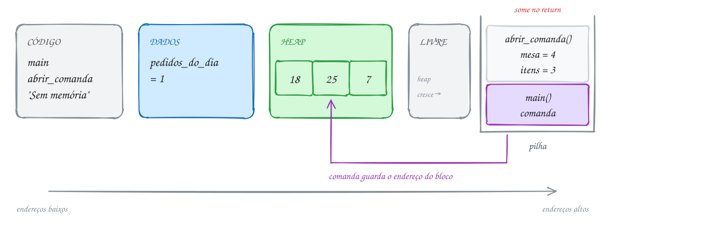
#include <stdio.h>
#include <stdlib.h>
int pedidos_do_dia = 0; // DADOS: existe do começo ao fim do programa
int *abrir_comanda(int mesa) {
int itens = 3; // PILHA: some quando a função retorna
int *comanda = malloc(itens * sizeof(int)); // o bloco fica no HEAP
if (comanda == NULL) {
return NULL;
}
comanda[0] = 18; // suco
comanda[1] = 25; // prato feito
comanda[2] = 7; // pudim
pedidos_do_dia++;
printf("Mesa %d: comanda com %d itens\n", mesa, itens);
return comanda; // o endereço volta; o bloco continua vivo no heap
}
int main(void) {
int *comanda = abrir_comanda(4); // PILHA: o ponteiro mora no frame de main
if (comanda == NULL) {
printf("Sem memória\n");
return 1;
}
int total = comanda[0] + comanda[1] + comanda[2];
printf("Total: R$ %d\n", total);
printf("Pedidos do dia: %d\n", pedidos_do_dia);
free(comanda); // devolve o bloco ao heap
return 0;
}
// Saída:
// Mesa 4: comanda com 3 itens
// Total: R$ 50
// Pedidos do dia: 1
O frame de abrir_comanda nasce e morre no meio do caminho; o bloco do heap
atravessa o return e só termina no free:
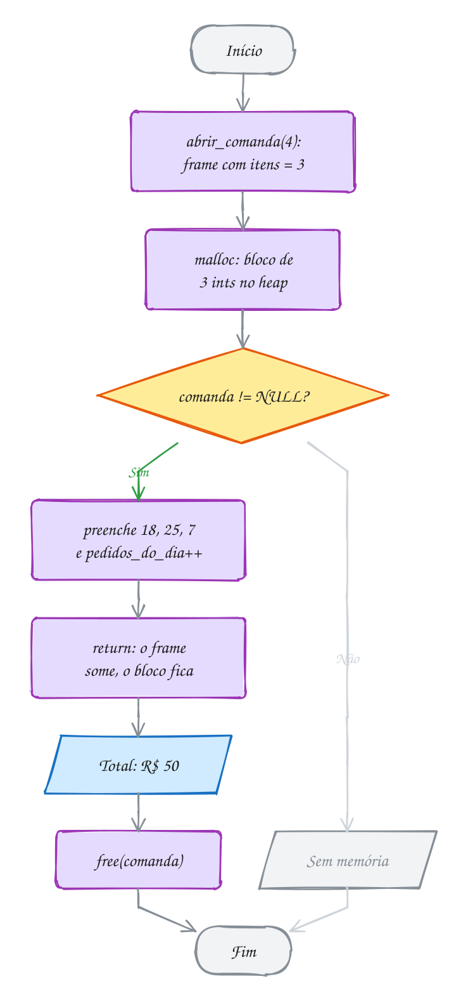
Exemplo A105 · Um bloco, três funções
#include <stdio.h>
#include <stdlib.h>
int blocos_abertos = 0; // DADOS: conta os blocos do heap ainda não devolvidos
// Cria o bolão no heap. O tamanho só aparece na hora de rodar.
int *criar_bolao(int participantes) {
int *palpites = malloc(participantes * sizeof *palpites); // HEAP
if (palpites != NULL) {
blocos_abertos++;
}
return palpites; // o frame de criar_bolao some aqui; o bloco, não
}
// Outra função, outro frame: mexe no MESMO bloco só pelo endereço.
void anotar_palpites(int *palpites, int participantes) {
for (int i = 0; i < participantes; i++) { // i mora na PILHA deste frame
palpites[i] = (i * 3) % 5; // quantos gols cada um aposta
}
}
// Uma terceira função decide a hora de devolver o bloco.
void encerrar_bolao(int *palpites) {
free(palpites);
blocos_abertos--;
}
int main(void) {
int participantes = 4;
int *bolao = criar_bolao(participantes);
if (bolao == NULL) {
printf("Sem memória\n");
return 1;
}
printf("Blocos abertos: %d\n", blocos_abertos);
anotar_palpites(bolao, participantes);
for (int i = 0; i < participantes; i++) {
printf("Participante %d: palpite %d\n", i + 1, bolao[i]);
}
encerrar_bolao(bolao);
bolao = NULL; // o endereço guardado não vale mais nada
printf("Blocos abertos: %d\n", blocos_abertos);
return 0;
}
// Saída:
// Blocos abertos: 1
// Participante 1: palpite 0
// Participante 2: palpite 3
// Participante 3: palpite 1
// Participante 4: palpite 4
// Blocos abertos: 0
//
// O bloco nasceu em criar_bolao, foi preenchido em anotar_palpites e morreu
// em encerrar_bolao. Nenhuma das três precisou estar viva ao mesmo tempo que
// as outras: quem manda no tempo de vida de um bloco do heap é você.
gcc ~/LPEDC/material/A105.c -o ~/LPEDC/material/A105 && ~/LPEDC/material/A105
Exemplo A106 · O mapa da memória
#include <stdio.h>
#include <stdlib.h>
int global = 10; // DADOS (inicializada)
static int contador; // DADOS (zerada, numa parte chamada .bss)
void mostrar_local_da_funcao(void) {
int fundo = 0; // PILHA: um frame acima do de main
printf("pilha (função): %p\n", (void *)&fundo);
}
int main(void) {
const char *frase = "bom dia"; // o texto fica numa área só de leitura
int local = 20; // PILHA
int *bloco = malloc(sizeof(int)); // HEAP
if (bloco == NULL) {
return 1;
}
printf("literal: %p\n", (void *)frase);
printf("global: %p\n", (void *)&global);
printf("static: %p\n", (void *)&contador);
printf("heap: %p\n", (void *)bloco);
printf("pilha (main): %p\n", (void *)&local);
mostrar_local_da_funcao();
free(bloco);
return 0;
}
// Saída com gcc puro (gcc A106.c -o mapa && ./mapa). Os endereços mudam a
// cada execução; repare na ordem:
// literal: 0x563b12ef101a <- perto do código, endereços baixos
// global: 0x563b12ef3010
// static: 0x563b12ef3018
// heap: 0x563b3719d2a0 <- logo acima dos dados
// pilha (main): 0x7ffe9c6f2914 <- lá no alto
// pilha (função): 0x7ffe9c6f28f4 <- frame novo, endereço MENOR
//
// Com o rodar, o heap aparece em 0x5020... e as locais em 0x7f...: o
// AddressSanitizer troca o heap e a pilha por versões próprias, vigiadas.
gcc ~/LPEDC/material/A106.c -o ~/LPEDC/material/A106 && ~/LPEDC/material/A106
Exercício E313 · ★☆☆
Complete o programa do placar do campeonato. Ele já tem a global recorde e o protótipo de ler_placar. Escreva ler_placar(int jogos) assim:
No main, chame ler_placar(3), atualize recorde com o maior gol do bloco e libere o bloco; depois faça o mesmo com ler_placar(2). No fim, mostre o recorde. Ao lado de cada declaração, escreva num comentário a região onde ela mora: código, dados, pilha ou heap.
Saída esperada:
Chamada 1: 0 2 4
Chamada 2: 0 2
Recorde: 4
Exercício E315 · ★★☆
No Linux, "ulimit -s" mostra o tamanho da pilha em KiB (em geral, 8192, ou seja, 8 MiB). Uma função recursiva guarda o histórico de preços de uma ação num vetor local: int historico[2000]; e chama a si mesma.
Escreva um programa que calcule e mostre quantos bytes esse vetor ocupa em cada chamada e quantas chamadas, no máximo, cabem numa pilha de 8 MiB. Depois faça a mesma conta para o vetor double historico[2000]; e mostre também. Use sizeof para o tamanho de cada tipo e divisão inteira.
Saída esperada:
int: cada chamada usa pelo menos 8000 bytes
int: cabem no máximo 1048 chamadas
double: cada chamada usa pelo menos 16000 bytes
double: cabem no máximo 524 chamadas
Exercício E316 · ★★☆
Um sensor de vibração de uma ponte grava 5.000.000 de leituras por dia. Simule as leituras com leitura[i] = i % 7 e mostre a soma de todas.
Faça em três passos:
rodar. Leia o que acontece.
sizeof aplicado ao próprio vetor.
Saída esperada (depois do passo 3):
O vetor ocupa 20000000 bytes
Soma das leituras: 14999995
Exercício E317 · ★★★
O programa abaixo mistura uma global, uma static e uma local numa função recursiva. Estenda o programa (sem mudar as contas) para ele mostrar o que acontece em cada frame:
Use os formatos da saída esperada. Rode e confira cada número com o lugar onde mora cada variável.
Saída esperada:
entra n=3: chamadas=1 local=1 contador=99
entra n=2: chamadas=2 local=1 contador=98
entra n=1: chamadas=3 local=1 contador=97
entra n=0: chamadas=4 local=1 contador=96
sai n=0: devolve 41
sai n=1: devolve 41
sai n=2: devolve 41
sai n=3: devolve 41
41
entra n=0: chamadas=5 local=1 contador=95
sai n=0: devolve 51
51
95
Fim do mês, hora de somar as corridas de aplicativo. Teve mês com 4 corridas
e teve mês com 60. Se você declarar double corridas[100];, desperdiça
espaço nos meses fracos e estoura no mês em que passar de 100. O tamanho
certo só aparece quando o programa já está rodando e pergunta quantas
corridas foram. Falta um jeito de pedir memória nessa hora, do tamanho exato.
Quem atende o pedido é o malloc (memory allocation, alocação de
memória), da biblioteca <stdlib.h>. Você diz quantos bytes quer, e ele
separa um bloco desse tamanho no heap (assunto 0053) e devolve o
endereço do começo. Esse endereço vai para um ponteiro, e o ponteiro age
como vetor: corridas[i] funciona como em qualquer vetor, pela regra
v[i] == *(v + i) do assunto 0047 (BACKES, 2013, cap. 11).
double *corridas = malloc(n * sizeof(double)); // n * 8 bytes
Leia a linha devagar, porque cada parte tem um motivo. O malloc conta em
bytes, não em elementos: malloc(4) dá 4 bytes, e não 4 double. Por
isso o pedido é n * sizeof(double), o número de itens vezes o tamanho de
cada um; com n igual a 4, são 32 bytes (CELES; RANGEL, 2002).
O retorno do malloc é um void * (assunto 0051), porque ele não sabe o
que você vai guardar. Em C, esse void * vira double * sozinho na
atribuição, então o cast (double *) na frente do malloc é dispensável
(BACKES, 2013, cap. 11).
O pedido pode falhar. Se não houver memória livre suficiente, o malloc
devolve NULL em vez de um endereço. Confira sempre, com if (corridas == NULL), antes de usar o bloco; escrever num NULL derruba o programa
(FEOFILOFF, 2009, ap. F).
O bloco também não vem limpo. O malloc não zera nada, e os bytes guardam o
lixo que estava ali antes. Preencha cada posição antes de ler (BACKES,
2013, cap. 11). O assunto 0055 mostra o calloc, que entrega o bloco
zerado.
Quando não precisar mais do bloco, devolva-o com free(corridas),
passando exatamente o endereço que o malloc deu. O free não pergunta o
tamanho porque o malloc anotou esse número num cabeçalho escondido, logo
antes do bloco. É por isso que free(p + 1) dá errado: o free procuraria o
cabeçalho no lugar errado (KERNIGHAN; RITCHIE, 1989, seção 8.7).
Depois do free, o ponteiro continua guardando o endereço antigo, que já
não é seu. Ele aponta para um lugar devolvido, e usá-lo é um erro. O hábito
que evita isso é anular o ponteiro logo em seguida: corridas = NULL;
(FEOFILOFF, 2009, ap. F).
A regra que resume tudo: todo malloc tem um free. O bloco esquecido
fica ocupado até o programa acabar, e se o pedido se repete num laço a
memória vai sumindo aos poucos. Esse erro se chama vazamento de memória
(memory leak) (DEITEL; DEITEL, 2011, cap. 12), e o assunto 0057 mostra como
encontrá-lo.
[!WARNING] O erro mais comum é contar elementos em vez de bytes:
malloc(n)paraninteiros reserva um quarto do necessário. Tire o tipo do próprio ponteiro:int *v = malloc(n * sizeof *v);. Sevvirardouble *, a conta acompanha.
O programa pergunta quantas corridas de aplicativo houve no mês (4), pede ao
heap 4 * 8 = 32 bytes, guarda os valores, soma e devolve o bloco:
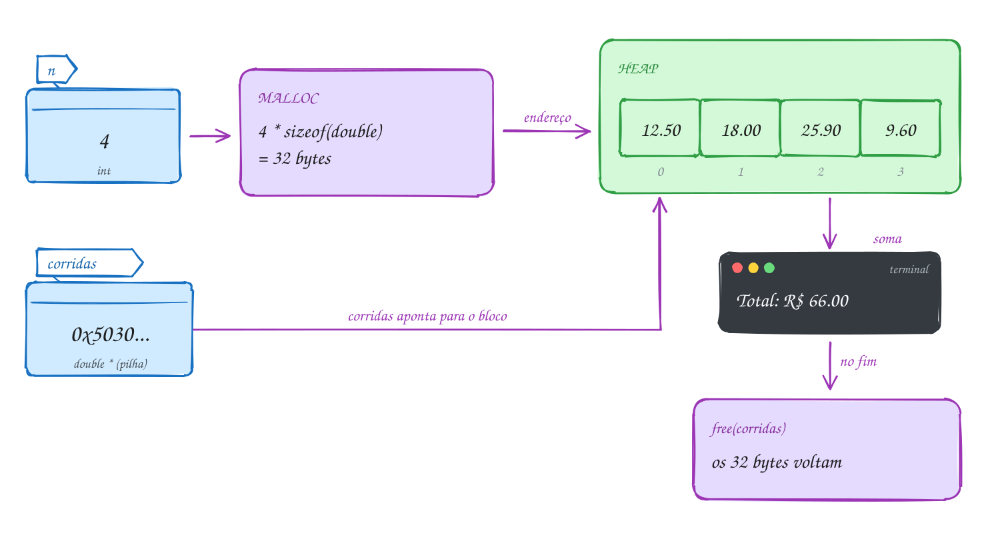
#include <stdio.h>
#include <stdlib.h>
int main(void) {
int n;
printf("Quantas corridas? ");
if (scanf("%d", &n) != 1 || n <= 0) {
printf("Quantidade inválida\n");
return 1;
}
// pede n * 8 bytes ao heap; o tamanho só é conhecido agora
double *corridas = malloc(n * sizeof(double));
if (corridas == NULL) {
printf("Sem memória\n");
return 1;
}
for (int i = 0; i < n; i++) {
printf("Valor da corrida %d: ", i + 1);
if (scanf("%lf", &corridas[i]) != 1) { // usa como um vetor comum
printf("Valor inválido\n");
free(corridas);
return 1;
}
}
double total = 0;
for (int i = 0; i < n; i++) {
total += corridas[i];
}
printf("Total: R$ %.2f\n", total);
printf("Média: R$ %.2f\n", total / n);
free(corridas); // devolve os bytes ao heap
corridas = NULL; // o ponteiro não aponta mais para lugar nenhum
return 0;
}
// Exemplo de uso:
// Quantas corridas? 4
// Valor da corrida 1: 12.50
// Valor da corrida 2: 18
// Valor da corrida 3: 25.90
// Valor da corrida 4: 9.60
// Total: R$ 66.00
// Média: R$ 16.50
Toda saída depois do malloc passa por um free, até a de erro no meio da
leitura, a mais fácil de esquecer:
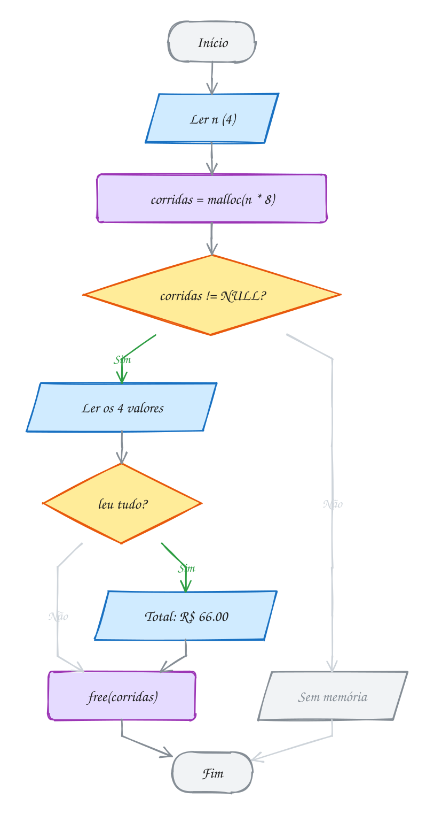
Exemplo A107 · A foto que não cabe na pilha
#include <stdio.h>
#include <stdlib.h>
int main(void) {
int largura = 4000;
int altura = 3000; // uma foto de 12 megapixels, em tons de cinza
// 12.000.000 de bytes: como vetor local, estouraria a pilha de 8 MiB.
// No heap, o limite é a memória livre da máquina.
size_t total = (size_t)largura * altura;
unsigned char *brilho = malloc(total * sizeof *brilho);
if (brilho == NULL) { // pedido grande: o NULL é possível de verdade
printf("Sem memória para a foto\n");
return 1;
}
printf("Pedi %zu bytes ao heap\n", total * sizeof *brilho);
// simula a foto: um degradê que vai de 0 (preto) a 255 (branco)
for (size_t i = 0; i < total; i++) {
brilho[i] = (unsigned char)(i % 256);
}
long soma = 0;
int claros = 0;
for (size_t i = 0; i < total; i++) {
soma += brilho[i];
if (brilho[i] >= 200) {
claros++;
}
}
printf("Brilho médio: %.2f\n", (double)soma / total);
printf("Pixels claros: %d\n", claros);
free(brilho); // 12 MB de volta ao heap de uma vez
brilho = NULL;
return 0;
}
// Saída:
// Pedi 12000000 bytes ao heap
// Brilho médio: 127.50
// Pixels claros: 2625000
//
// Troque o malloc por unsigned char brilho[12000000]; dentro do main e rode:
// o AddressSanitizer acusa stack-overflow antes da primeira linha.
gcc ~/LPEDC/material/A107.c -o ~/LPEDC/material/A107 && ~/LPEDC/material/A107
Exemplo A108 · Quem cria e quem libera
#include <stdio.h>
#include <stdlib.h>
// Divide um valor em n parcelas, em centavos. Os centavos que sobram vão
// para as primeiras parcelas. Devolve um bloco novo no heap: quem chama
// fica responsável pelo free.
int *parcelar(int total_centavos, int n) {
int *parcelas = malloc(n * sizeof *parcelas); // sizeof *p: o tipo vem do ponteiro
if (parcelas == NULL) {
return NULL;
}
int base = total_centavos / n;
int sobra = total_centavos % n;
for (int i = 0; i < n; i++) {
parcelas[i] = base + (i < sobra ? 1 : 0);
}
return parcelas; // o bloco sobrevive ao return
}
int main(void) {
int n = 3;
int *parcelas = parcelar(10000, n); // R$ 100,00 em 3 vezes
if (parcelas == NULL) {
printf("Sem memória\n");
return 1;
}
printf("Bloco de %zu bytes no heap\n", n * sizeof *parcelas);
for (int i = 0; i < n; i++) {
printf("Parcela %d: R$ %d.%02d\n", i + 1, parcelas[i] / 100, parcelas[i] % 100);
}
free(parcelas); // quem recebeu o bloco, libera
parcelas = NULL;
free(parcelas); // free(NULL) não faz nada: é seguro
return 0;
}
// Saída:
// Bloco de 12 bytes no heap
// Parcela 1: R$ 33.34
// Parcela 2: R$ 33.33
// Parcela 3: R$ 33.33
gcc ~/LPEDC/material/A108.c -o ~/LPEDC/material/A108 && ~/LPEDC/material/A108
Exercício E320 · ★☆☆
Complete a função duplicar: ela recebe uma string e devolve uma CÓPIA dela num bloco novo do heap, do tamanho exato. O main já está pronto: ele passa a cópia para maiúsculas e mostra que a original não mudou.
Saída esperada:
Original: coxinha
Cópia: COXINHA
Exercício E321 · ★★☆
Escreva a função
int *filtrar_pares(const int *v, int n, int *qtd);
que devolve um vetor NOVO, no heap, só com os números pares de v, do tamanho exato. A quantidade de pares volta por *qtd. Teste com os números sorteados 7, 4, 10, 3, 8, 1, 6.
Saída esperada:
4 pares: 4 10 8 6
Exercício E322 · ★★☆
Escreva um programa que faça de verdade as cinco alocações abaixo. Antes de cada malloc, guarde numa variável size_t quantos bytes ele vai pedir (ex.: size_t ta = 5 * sizeof(int);) e passe essa variável para o malloc. Confira o NULL de cada uma, mostre os cinco tamanhos, mostre quantos int cabem inteiros no bloco e) e libere os cinco blocos no fim.
a) int *a = malloc(5 * sizeof(int));
b) double *b = malloc(5 * sizeof(double));
c) int **c = malloc(3 * sizeof(int *));
d) char *d = malloc(strlen("Recife") + 1);
e) int *e = malloc(5);
Saída esperada (num PC de 64 bits):
a) 20 bytes
b) 40 bytes
c) 24 bytes
d) 7 bytes
e) 5 bytes: cabe 1 int
Exercício E324 · ★★★
Escreva a função
char *juntar(const char *a, const char *b);
que devolve uma string NOVA, no heap, com a, um espaço e b. Depois, em main, monte o nome do crachá "Maria Clara Fonseca" chamando juntar duas vezes: primeiro "Maria" com "Clara", depois o resultado com "Fonseca". Mostre o nome e o tamanho, e não deixe nenhum bloco para trás.
Saída esperada:
Crachá: Maria Clara Fonseca (19 caracteres)
Você abriu uma vaquinha para o churrasco e os Pix vão chegando: R$ 50,
R$ 120, R$ 35. Você não sabe quantos serão. O malloc do assunto 0054 pede
um bloco de tamanho certo, mas o tamanho precisa ser conhecido na hora do
pedido. Aqui ele só se descobre no fim. O bloco não cresce sozinho; quem o
faz crescer é você, com o realloc. Antes dele, vale conhecer um parente do
malloc que resolve outro incômodo.
O calloc recebe a quantidade de itens e o tamanho de cada um em
argumentos separados, e entrega o bloco zerado (BACKES, 2013, cap. 11):
int *contagem = calloc(5, sizeof(int)); // 5 ints, todos valendo 0
Use o calloc quando o zero inicial importa: contadores, placares, tabelas
de frequência. Com o malloc, o bloco viria com lixo e você precisaria de um
laço só para zerá-lo. Como o malloc, ele devolve NULL se faltar memória.
Agora o crescimento. O realloc(p, novo_tamanho) muda o tamanho de um
bloco que já está no heap e preserva o conteúdo até o menor dos dois
tamanhos. Se o bloco cresceu, a parte nova vem com lixo; se encolheu, o que
passava do novo tamanho se perde (BACKES, 2013, cap. 11).
Para crescer, o realloc tenta primeiro esticar o bloco no próprio lugar,
se o espaço logo depois dele estiver livre. Quando não está, ele faz uma
mudança completa: aloca um bloco novo em outro lugar, copia o conteúdo,
libera o antigo e devolve o endereço novo (BACKES, 2013, cap. 11). É
como trocar de casa quando a família cresce: os móveis vão junto, mas o
endereço muda. Daí a regra que mais pega: depois de um realloc, o endereço
antigo pode não valer mais. Todo ponteiro que apontava para dentro do bloco
velho virou um ponteiro solto, que aponta para memória devolvida.
O realloc também pode falhar. Se faltar memória, ele devolve NULL e não
mexe no bloco antigo, que continua inteiro e ocupado. Isso cria uma
armadilha: se você escrever o resultado direto no único ponteiro que tinha o
endereço do bloco, perde esse endereço. A saída é guardar o resultado num
ponteiro temporário, conferir se não é NULL e só então trocar (CELES;
RANGEL, 2002).
Resta decidir quanto crescer. Chamar o realloc a cada Pix funciona, mas
cada mudança de lugar copia o vetor inteiro. Para evitar isso, guarde dois
números: a quantidade, quantos elementos você já usou, e a
capacidade, quantos cabem no bloco. Enquanto a quantidade for menor que
a capacidade, o novo Pix entra sem realloc. Quando encher, dobre a
capacidade. Os realloc ficam raros: para guardar 1000 elementos começando
com capacidade 1, bastam 10 dobras (1, 2, 4, até 1024).
[!WARNING]
v = realloc(v, n)é o erro clássico: se falhar,vviraNULLe o bloco antigo fica no heap sem dono, com os dados perdidos. Use um temporário. E não guarde&v[3]antes de umrealloc: o bloco pode ter mudado de lugar.
Os Pix de uma vaquinha vão chegando: R$ 50, 120, 35, 80 e 15. O vetor nasce com capacidade 2, dobra para 4 no terceiro Pix e para 8 no quinto:
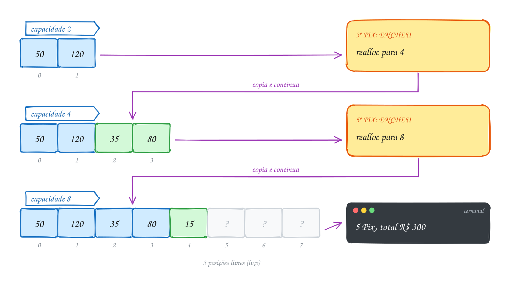
#include <stdio.h>
#include <stdlib.h>
int main(void) {
int chegando[] = {50, 120, 35, 80, 15}; // os Pix do dia, em R$
int capacidade = 2; // cabem 2 por enquanto
int quantidade = 0; // quantos já guardei
int *pix = malloc(capacidade * sizeof *pix);
if (pix == NULL) {
return 1;
}
for (int i = 0; i < 5; i++) {
if (quantidade == capacidade) { // encheu: dobra a capacidade
int nova = capacidade * 2;
int *maior = realloc(pix, nova * sizeof *pix); // temporário!
if (maior == NULL) {
free(pix); // o bloco antigo continua valendo: libera
return 1;
}
printf("Capacidade: %d -> %d\n", capacidade, nova);
pix = maior;
capacidade = nova;
}
pix[quantidade] = chegando[i]; // o "push"
quantidade++;
}
int total = 0;
for (int i = 0; i < quantidade; i++) {
total += pix[i];
}
printf("%d Pix, total R$ %d\n", quantidade, total);
printf("Sobram %d posições livres\n", capacidade - quantidade);
free(pix);
return 0;
}
// Saída:
// Capacidade: 2 -> 4
// Capacidade: 4 -> 8
// 5 Pix, total R$ 300
// Sobram 3 posições livres
A pergunta "encheu?" vem a cada Pix, mas o desvio para o realloc só acontece
duas vezes:
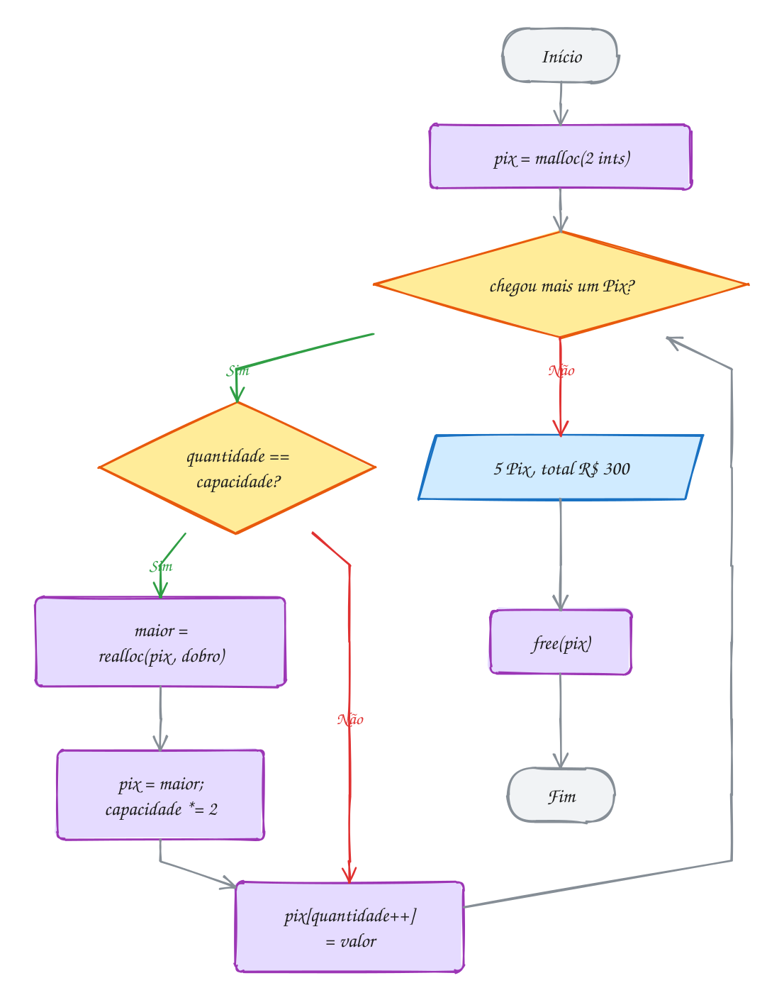
Exemplo A109 · A lista que nasce do NULL
#include <stdio.h>
#include <stdlib.h>
#include <string.h>
int main(void) {
const char *itens[] = {"arroz", "leite", "banana", "ovos"};
char *lista = NULL; // ainda não existe bloco nenhum
size_t tamanho = 0; // bytes do bloco atual
for (int i = 0; i < 4; i++) {
// + 2 para o ", " entre os itens (só a partir do segundo);
// + 1 para o '\0' entra só no primeiro, quando tamanho ainda é 0
size_t extra = strlen(itens[i]) + (i == 0 ? 1 : 2);
// realloc(NULL, n) funciona como malloc(n): a primeira volta cria o
// bloco; as outras aumentam e PRESERVAM o que já estava escrito.
char *maior = realloc(lista, tamanho + extra);
if (maior == NULL) {
free(lista);
return 1;
}
lista = maior;
if (i == 0) {
lista[0] = '\0'; // bloco novo vem com lixo: vira string vazia
} else {
strcat(lista, ", ");
}
strcat(lista, itens[i]);
tamanho += extra;
printf("%2zu bytes: %s\n", tamanho, lista);
}
free(lista);
return 0;
}
// Saída:
// 6 bytes: arroz
// 13 bytes: arroz, leite
// 21 bytes: arroz, leite, banana
// 27 bytes: arroz, leite, banana, ovos
//
// Cada linha tem strlen + 1 bytes, nem um a mais: o bloco cresce no tamanho
// exato de cada item. Começar com o ponteiro em NULL evita um malloc separado
// antes do laço.
gcc ~/LPEDC/material/A109.c -o ~/LPEDC/material/A109 && ~/LPEDC/material/A109
Exemplo A110 · A enquete com calloc
#include <stdio.h>
#include <stdlib.h>
int main(void) {
int votos[] = {2, 3, 2, 1, 4, 2, 3, 2, 1, 2}; // opção escolhida por voto
int total_votos = 10;
int opcoes = 4;
// um contador por opção (1 a 4); a posição 0 fica sem uso.
// calloc(quantidade, tamanho) entrega tudo zerado: os contadores já
// começam em 0. Com malloc, começariam com lixo.
int *contagem = calloc(opcoes + 1, sizeof *contagem);
if (contagem == NULL) {
return 1;
}
for (int i = 0; i < total_votos; i++) {
contagem[votos[i]]++;
}
for (int op = 1; op <= opcoes; op++) {
printf("Opção %d: %d ", op, contagem[op]);
for (int k = 0; k < contagem[op]; k++) {
printf("#");
}
printf("\n");
}
free(contagem);
return 0;
}
// Saída:
// Opção 1: 2 ##
// Opção 2: 5 #####
// Opção 3: 2 ##
// Opção 4: 1 #
gcc ~/LPEDC/material/A110.c -o ~/LPEDC/material/A110 && ~/LPEDC/material/A110
Exercício E325 · ★☆☆
Num jogo de tabuleiro, o dado saiu assim em 12 jogadas: 3, 6, 1, 6, 2, 5, 6, 3, 4, 6, 1, 2. Use calloc para criar os contadores das faces (zerados) e mostre quantas vezes cada face saiu, com um # por vez.
Saída esperada:
1: 2 ##
2: 2 ##
3: 2 ##
4: 1 #
5: 1 #
6: 4 ####
Exercício E327 · ★★☆
Leia números inteiros do teclado até aparecer 0 (o 0 não entra). Guarde num vetor dinâmico que começa com capacidade 2 e dobra (realloc) quando enche. No fim, mostre os números na ordem contrária e a capacidade final.
Entrada:
5 8 2 9 4 0
Saída esperada:
Ao contrário: 4 9 2 8 5
Capacidade final: 8
Exercício E328 · ★★☆
Um sensor de umidade mandou 10 leituras, mas -1 significa "falha na leitura": 12, -1, 15, 14, -1, -1, 13, 16, -1, 11. Copie as leituras para um bloco do heap, remova as falhas puxando as válidas para a frente (no mesmo bloco) e depois ENCOLHA o bloco com realloc para o tamanho exato.
Saída esperada:
6 leituras válidas: 12 15 14 13 16 11
Bloco encolheu de 40 para 24 bytes
Exercício E329 · ★★★
Compare duas estratégias de crescimento para guardar 1000 números, com capacidade inicial 1:
A) crescer de 1 em 1 (capacidade + 1) sempre que encher;
B) dobrar a capacidade sempre que encher.
Escreva um programa que faça os dois vetores de verdade (com realloc) e conte, para cada estratégia, quantos realloc foram feitos e quantos elementos o realloc precisou copiar no pior caso (a quantidade guardada na hora de cada realloc).
Saída esperada:
+1: 999 realocações, 499500 cópias
dobrar: 10 realocações, 1023 cópias
Uma rede de lojas quer a planilha de vendas: uma linha por loja, uma coluna
por semana. Este mês são 3 lojas e 4 semanas. No mês que vem abre a quarta
loja, e o relatório do trimestre tem 13 semanas. Uma matriz fixa como int vendas[3][4] (assunto 0039) não serve, porque as dimensões só aparecem com
o programa rodando. Você precisa de uma matriz pedida ao heap.
O problema é que o malloc só entrega blocos de uma dimensão: uma fila
de bytes, sem linhas nem colunas. A matriz dinâmica é montada a partir de
vetores, e há dois jeitos clássicos de montá-la (CELES; RANGEL, 2002).
O primeiro é o bloco único. Você aloca linhas * colunas elementos de
uma vez, uma fila só, e calcula a posição de cada célula: o elemento da linha
i e coluna j fica em v[i * colunas + j]. É a mesma conta que o
compilador faz por você numa matriz fixa, guardada linha após linha. A
vantagem é a simplicidade: um malloc, um free e tudo colado na memória.
O preço é a escrita: v[i][j] não funciona, porque v é um vetor simples
(BACKES, 2013, cap. 11).
O segundo é o vetor de ponteiros. Primeiro você aloca um vetor com
linhas ponteiros, guardado num int **m; depois faz um malloc por linha,
cada um com colunas inteiros, e guarda o endereço em m[i]. Agora
m[i][j] funciona: m[i] é o endereço da linha i, e o [j] anda dentro
dela, os dois saltos do assunto 0049. Pense num fichário: a primeira folha é
um índice que diz em que página começa cada loja, e cada página é uma linha.
Como cada linha é pedida em separado, elas podem ter tamanhos diferentes;
no triângulo de Pascal, a linha i tem i + 1 elementos (FEOFILOFF, 2009,
ap. F).
Na hora de pedir, o sizeof confunde. A regra é: o que você aloca tem um
* a menos que o ponteiro que recebe. int **m recebe um vetor de
int *, então o primeiro pedido usa o tamanho de um int *. m[i], que é
um int *, recebe um vetor de int. Escrever sizeof *m e sizeof *m[i]
deixa o compilador fazer essa conta por você (BACKES, 2013, cap. 11).
Liberar também tem ordem: primeiro cada linha, depois o vetor de
ponteiros. Se você fizer free(m) antes, perde os endereços das linhas, e
elas ficam presas no heap. O mesmo cuidado vale na criação: se o malloc da
terceira linha falhar, as duas primeiras já foram alocadas, e a função
precisa liberá-las antes de devolver NULL (CELES; RANGEL, 2002).
O C99 oferece um atalho, o VLA: int vendas[lojas][semanas];, com as
dimensões vindas de variáveis. Ele mora na pilha, que é pequena e não
avisa quando estoura (BACKES, 2013). O assunto 0172 mostra quando ele vale a
pena.
Os dois jeitos têm custos diferentes. Com int **, cada m[i][j] faz
dois acessos à memória, um para buscar o ponteiro m[i] e outro para o
inteiro. No bloco único, ou numa matriz fixa, é um acesso só (CELES; RANGEL,
2002). Em troca, o vetor de ponteiros dá a escrita m[i][j] e as linhas de
tamanhos diferentes.
[!WARNING]
int **m = malloc(linhas * sizeof(int));é bug: num PC de 64 bits,inttem 4 bytes eint *tem 8. Você aloca metade do necessário e as últimas linhas são gravadas fora do bloco. Escrevasizeof *m.
A planilha de vendas de 3 lojas por 4 semanas (em R$ mil) vira um vetor de 3 ponteiros, cada um para uma linha de 4 inteiros, em qualquer lugar do heap:
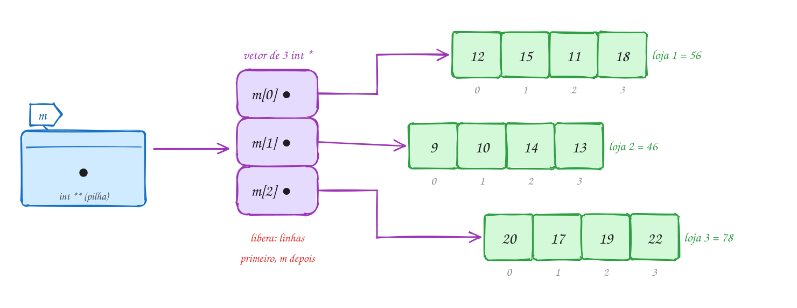
#include <stdio.h>
#include <stdlib.h>
void liberar_matriz(int **m, int linhas) {
if (m == NULL) {
return;
}
for (int i = 0; i < linhas; i++) {
free(m[i]); // primeiro cada linha...
}
free(m); // ...depois o vetor de ponteiros
}
int **criar_matriz(int linhas, int colunas) {
int **m = malloc(linhas * sizeof *m); // vetor de int *: uma por linha
if (m == NULL) {
return NULL;
}
for (int i = 0; i < linhas; i++) {
m[i] = malloc(colunas * sizeof *m[i]); // cada linha: colunas ints
if (m[i] == NULL) {
liberar_matriz(m, i); // desfaz as linhas que já deram certo
return NULL;
}
}
return m;
}
int main(void) {
int lojas = 3;
int semanas = 4;
int vendas[3][4] = {{12, 15, 11, 18}, {9, 10, 14, 13}, {20, 17, 19, 22}}; // R$ mil
int **m = criar_matriz(lojas, semanas);
if (m == NULL) {
printf("Sem memória\n");
return 1;
}
for (int i = 0; i < lojas; i++) {
for (int j = 0; j < semanas; j++) {
m[i][j] = vendas[i][j]; // a notação de sempre
}
}
for (int i = 0; i < lojas; i++) {
int total = 0;
for (int j = 0; j < semanas; j++) {
total += m[i][j];
}
printf("Loja %d: R$ %d mil\n", i + 1, total);
}
liberar_matriz(m, lojas);
return 0;
}
// Saída:
// Loja 1: R$ 56 mil
// Loja 2: R$ 46 mil
// Loja 3: R$ 78 mil
A criação é um laço com saída de emergência: se uma linha falhar, o caminho de erro libera o que já existe:
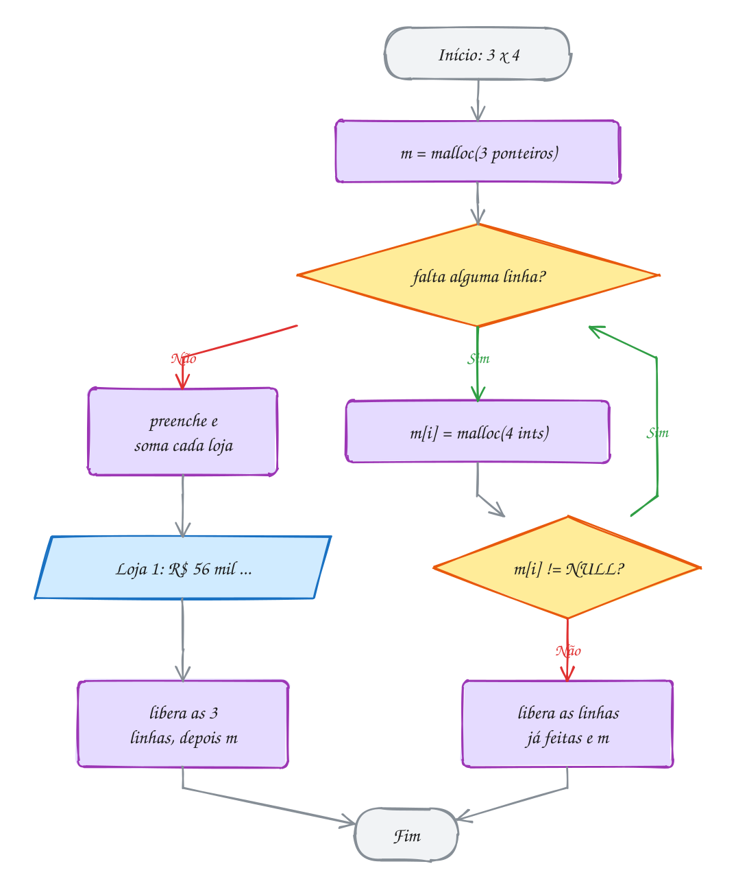
Exemplo A111 · Trocar linhas sem copiar
#include <stdio.h>
#include <stdlib.h>
int total_da_linha(const int *linha, int colunas) {
int total = 0;
for (int j = 0; j < colunas; j++) {
total += linha[j];
}
return total;
}
int main(void) {
int times = 4;
int rodadas = 5;
int pontos[4][5] = {{1, 0, 3, 1, 0}, // Time A
{3, 3, 1, 0, 3}, // Time B
{0, 1, 1, 1, 1}, // Time C
{3, 0, 3, 3, 1}}; // Time D
int **tabela = malloc(times * sizeof *tabela);
if (tabela == NULL) {
return 1;
}
for (int i = 0; i < times; i++) {
tabela[i] = malloc(rodadas * sizeof *tabela[i]);
if (tabela[i] == NULL) {
for (int k = 0; k < i; k++) {
free(tabela[k]);
}
free(tabela);
return 1;
}
for (int j = 0; j < rodadas; j++) {
tabela[i][j] = pontos[i][j];
}
}
char nome[4] = {'A', 'B', 'C', 'D'};
// Ordena do mais pontuado ao menos (seleção). Trocar duas linhas é
// trocar dois PONTEIROS: 8 bytes cada, não importa quantas rodadas.
for (int i = 0; i < times - 1; i++) {
int melhor = i;
for (int k = i + 1; k < times; k++) {
if (total_da_linha(tabela[k], rodadas) > total_da_linha(tabela[melhor], rodadas)) {
melhor = k;
}
}
int *linha = tabela[i]; // só o endereço da linha muda de gaveta
tabela[i] = tabela[melhor];
tabela[melhor] = linha;
char letra = nome[i];
nome[i] = nome[melhor];
nome[melhor] = letra;
}
for (int i = 0; i < times; i++) {
printf("%dº Time %c: %2d pts |", i + 1, nome[i], total_da_linha(tabela[i], rodadas));
for (int j = 0; j < rodadas; j++) {
printf(" %d", tabela[i][j]);
}
printf("\n");
}
for (int i = 0; i < times; i++) {
free(tabela[i]); // a ordem das linhas mudou, mas cada bloco é o mesmo
}
free(tabela);
return 0;
}
// Saída:
// 1º Time B: 10 pts | 3 3 1 0 3
// 2º Time D: 10 pts | 3 0 3 3 1
// 3º Time A: 5 pts | 1 0 3 1 0
// 4º Time C: 4 pts | 0 1 1 1 1
//
// Numa matriz fixa int [4][5], trocar duas linhas exigiria copiar os 5
// números de cada uma. Com int **, as linhas nem saem do lugar no heap.
gcc ~/LPEDC/material/A111.c -o ~/LPEDC/material/A111 && ~/LPEDC/material/A111
Exemplo A112 · O mapa do cinema num bloco só
#include <stdio.h>
#include <stdlib.h>
int main(void) {
int fileiras = 4;
int poltronas = 6;
// um bloco só com fileiras * poltronas chars; a posição (i, j) fica em
// i * poltronas + j: a mesma conta que o compilador faz numa matriz fixa
char *sala = malloc(fileiras * poltronas * sizeof *sala);
if (sala == NULL) {
return 1;
}
for (int k = 0; k < fileiras * poltronas; k++) {
sala[k] = 'L'; // livre
}
sala[1 * poltronas + 2] = 'X'; // fileira B, poltrona 3
sala[1 * poltronas + 3] = 'X'; // fileira B, poltrona 4
sala[3 * poltronas + 0] = 'X'; // fileira D, poltrona 1
printf(" 1 2 3 4 5 6\n");
for (int i = 0; i < fileiras; i++) {
printf("%c ", 'A' + i);
for (int j = 0; j < poltronas; j++) {
printf(" %c", sala[i * poltronas + j]);
}
printf("\n");
}
printf("Um malloc, um free, %d bytes seguidos\n", fileiras * poltronas);
free(sala);
return 0;
}
// Saída:
// 1 2 3 4 5 6
// A L L L L L L
// B L L X X L L
// C L L L L L L
// D X L L L L L
// Um malloc, um free, 24 bytes seguidos
gcc ~/LPEDC/material/A112.c -o ~/LPEDC/material/A112 && ~/LPEDC/material/A112
Exercício E332 · ★☆☆
Uma matriz de 5 linhas e 8 colunas vai morar num bloco único: int *v = malloc(5 * 8 * sizeof *v); e o elemento (i, j) fica em v[i * 8 + j]. Escreva as duas funções de conversão:
int indice(int i, int j, int colunas); // (i, j) -> k
void posicao(int k, int colunas, int *i, int *j); // k -> (i, j)
No main, aloque o bloco, guarde em cada (i, j) o valor i * 10 + j (usando indice) e mostre os quatro casos abaixo. O valor guardado confere a conta: o 23 só pode estar na linha 2, coluna 3. Libere o bloco no fim.
Saída esperada:
(2, 3) -> índice 19, valor 23
(4, 7) -> índice 39, valor 47
(0, 5) -> índice 5, valor 5
índice 26 -> (3, 2), valor 32
Exercício E333 · ★★☆
Escreva a função
int **transpor(int **m, int linhas, int colunas);
que devolve uma matriz NOVA, com colunas linhas e linhas colunas, em que t[j][i] = m[i][j]. Teste com a matriz 2 x 3 de horas de estudo por semana (linhas = semanas, colunas = matérias):
2 5 1
3 4 0
Saída esperada (a transposta, 3 x 2):
2 3
5 4
1 0
Exercício E334 · ★★☆
Monte o triângulo de Pascal com 6 linhas usando um vetor de ponteiros em que a linha i tem exatamente i + 1 elementos (nada de matriz quadrada com metade desperdiçada). As pontas de cada linha valem 1 e cada número de dentro é a soma dos dois de cima: p[i][j] = p[i-1][j-1] + p[i-1][j].
Saída esperada:
1
1 1
1 2 1
1 3 3 1
1 4 6 4 1
1 5 10 10 5 1
Elementos guardados: 21
Exercício E336 · ★★★
Escreva a função
int **multiplicar(int **a, int la, int ca, int **b, int lb, int cb);
que devolve uma matriz NOVA la x cb com o produto a * b, ou NULL se as dimensões não combinarem (ca precisa ser igual a lb). Teste com
A (2 x 3) B (3 x 2)
1 2 3 7 8
4 5 6 9 10
11 12
e depois tente A * A (2 x 3 vezes 2 x 3).
Saída esperada:
58 64
139 154
A * A: dimensões incompatíveis
O sistema do caixa da padaria funciona de manhã. Às seis da tarde está lento, e no sábado trava. Ninguém mexeu no código. A cada venda, um pedacinho de memória ficava para trás, e depois de milhares de vendas o heap acabou. Com o heap nas mãos, você ganhou poder e uma responsabilidade nova: no C, quem cria esse tipo de erro e quem o corrige é você.
O que torna esses erros perigosos é que o programa costuma funcionar. Ele mostra a saída certa, termina sem reclamar e quebra só na máquina do cliente, dias depois. Por isso existem ferramentas que vigiam a memória durante a execução. Antes delas, vale conhecer os quatro erros clássicos, um de cada vez.
O primeiro é o da padaria, o vazamento de memória (memory leak): um
bloco que ninguém liberou e cujo endereço ninguém mais guarda. Ele fica
ocupado até o programa acabar. Uma vez só não faz falta; repetido a cada
venda, deixa o programa lento e o derruba depois de horas (DEITEL; DEITEL,
2011, cap. 12). Acontece, por exemplo, quando uma função faz malloc num
ponteiro local e retorna sem free: o endereço morre com o frame, e o bloco
fica.
O segundo nasce do ponteiro solto (dangling pointer). Depois de
free(p), a variável p continua guardando o mesmo endereço; o free
devolve o bloco, mas não apaga o ponteiro. Usar p depois disso é o uso
depois do free. O pior é que pode até ler o valor antigo, porque ninguém
apagou os bytes. Funciona por sorte, até o malloc entregar aquele pedaço a
outra parte do programa, que passa a dividir a memória com você sem saber
(BACKES, 2013, cap. 11).
O terceiro é o free duplo: liberar o mesmo bloco duas vezes, em geral
por dois ponteiros que apontavam para ele ou por um ponteiro solto que
ninguém anulou (GOOGLE, s.d.). O hábito free(p); p = NULL; do assunto 0054
ajuda, porque free(NULL) não faz nada.
O quarto é o estouro no heap: ler ou escrever além do fim (ou antes do
começo) de um bloco. Ele é traiçoeiro porque, logo depois do bloco, costuma
morar o cabeçalho escondido do bloco vizinho (assunto 0054). Um byte a mais
estraga a contabilidade do malloc, e o programa quebra depois, num free
que não tem culpa nenhuma (KERNIGHAN; RITCHIE, 1989, seção 8.7).
A primeira ferramenta é o AddressSanitizer (ASan), que vem no gcc.
Compile com -fsanitize=address -g. O compilador põe vigias em volta de
cada bloco e confere cada acesso; no primeiro erro, o programa para e mostra
a linha do erro, a linha em que o bloco foi alocado e a linha em que foi
liberado. No fim da execução, uma parte dele, o LeakSanitizer, lista o
que vazou (GOOGLE, s.d.). As flags de estudo do curso já o ligam.
A segunda é o valgrind. Ele roda o executável normal, sem recompilar,
numa máquina virtual que vigia cada byte. Fica de 20 a 50 vezes mais lento,
mas pega uma coisa que o ASan não pega: ler memória que nunca recebeu valor.
Instale com sudo pacman -S valgrind (Arch) ou sudo apt install valgrind
(Debian/Ubuntu) e rode valgrind ./programa (VALGRIND DEVELOPERS, s.d.). A
tabela junta os quatro erros e a mensagem do ASan para cada um:
| Erro | O que é | O AddressSanitizer diz |
|---|---|---|
| vazamento | um bloco que ninguém libera e ninguém mais acha | detected memory leaks |
| uso depois do free | ler ou escrever num bloco já devolvido (ponteiro solto) | heap-use-after-free |
| free duplo | liberar o mesmo bloco duas vezes | attempting double-free |
| estouro | passar do fim (ou do começo) de um bloco | heap-buffer-overflow |
[!WARNING] "Rodou e deu a saída certa" não prova nada em C. Uso depois do
free, estouro de um byte e leitura de lixo são comportamento indefinido: o programa pode funcionar hoje e quebrar com outro compilador. Rode com o ASan (flags de estudo) e, na dúvida, comvalgrind ./programa.
A função total_do_pedido copia os 4 preços de um pedido para um bloco de 16
bytes e soma. A primeira versão esquecia o free: cada um dos 3 pedidos
deixava 16 bytes perdidos, e o ASan mostra isso no fim:
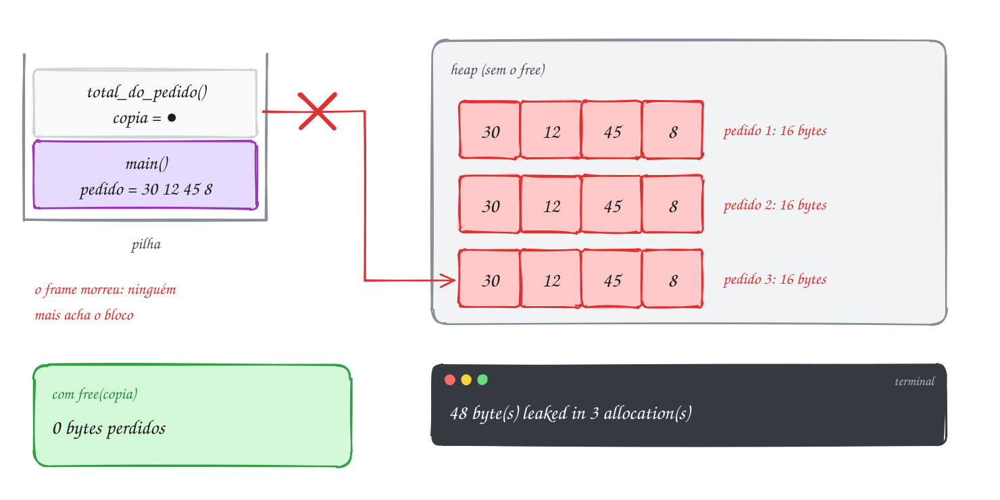
O relatório da versão sem o free (salva como pedido.c): o tipo do erro,
quanto vazou e a pilha de chamadas do malloc:
==12072==ERROR: LeakSanitizer: detected memory leaks
Direct leak of 48 byte(s) in 3 object(s) allocated from:
#0 0x7f1503afd9c7 in malloc
#1 0x55bff3c602ef in total_do_pedido pedido.c:5
#2 0x55bff3c6071c in main pedido.c:20
SUMMARY: AddressSanitizer: 48 byte(s) leaked in 3 allocation(s).
A versão corrigida tem uma linha a mais:
#include <stdio.h>
#include <stdlib.h>
int total_do_pedido(const int *precos, int itens) {
int *copia = malloc(itens * sizeof *copia);
if (copia == NULL) {
return -1;
}
int total = 0;
for (int i = 0; i < itens; i++) {
copia[i] = precos[i];
total += copia[i];
}
free(copia); // sem esta linha, cada pedido deixaria 16 bytes para trás
return total;
}
int main(void) {
int pedido[] = {30, 12, 45, 8};
for (int p = 1; p <= 3; p++) {
printf("Pedido %d: R$ %d\n", p, total_do_pedido(pedido, 4));
}
return 0;
}
// Saída:
// Pedido 1: R$ 95
// Pedido 2: R$ 95
// Pedido 3: R$ 95
O free precisa vir antes do return, que destrói a única variável que sabia
onde o bloco estava:
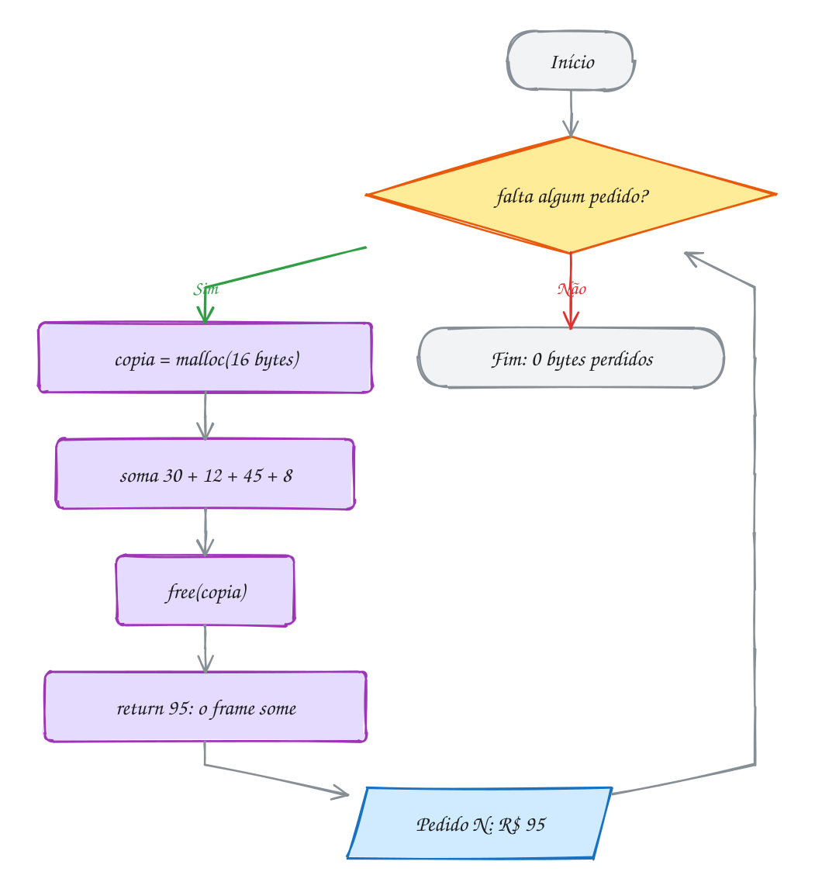
Exemplo A113 · Todo caminho de saída libera
#include <stdio.h>
#include <stdlib.h>
// Copia as notas de um aluno e calcula a média. Uma nota fora de 0 a 10
// cancela tudo, e a função sai mais cedo: esse return também precisa do free.
// Devolve -1 se a lista for inválida ou faltar memória.
double media_valida(const double *notas, int n) {
double *copia = malloc(n * sizeof *copia);
if (copia == NULL) {
return -1; // nada foi alocado: nada a liberar
}
double soma = 0;
for (int i = 0; i < n; i++) {
if (notas[i] < 0 || notas[i] > 10) {
printf(" nota %d inválida: %.1f\n", i + 1, notas[i]);
free(copia); // a saída de erro é a que mais esquece
return -1;
}
copia[i] = notas[i];
soma += copia[i];
}
free(copia); // a saída normal
return soma / n;
}
int main(void) {
double ana[] = {7.5, 8.0, 9.0};
double beto[] = {6.0, 11.0, 7.0}; // alguém digitou 11
double caio[] = {5.0, 7.0, 6.0};
const double *turma[] = {ana, beto, caio};
const char *nomes[] = {"Ana", "Beto", "Caio"};
for (int a = 0; a < 3; a++) {
printf("%s:\n", nomes[a]);
double m = media_valida(turma[a], 3);
if (m < 0) {
printf(" sem média\n");
} else {
printf(" média %.1f\n", m);
}
}
return 0;
}
// Saída:
// Ana:
// média 8.2
// Beto:
// nota 2 inválida: 11.0
// sem média
// Caio:
// média 6.0
//
// Apague o free(copia) de dentro do if e rode de novo: Ana e Caio continuam
// certos, mas no fim o LeakSanitizer acusa 24 bytes em 1 bloco, o do Beto.
// Vazamento em caminho de erro é traiçoeiro: só aparece quando o erro
// acontece. Antes de cada return, pergunte: o que já foi alocado aqui?
gcc ~/LPEDC/material/A113.c -o ~/LPEDC/material/A113 && ~/LPEDC/material/A113
Exemplo A114 · Free, NULL e valgrind
#include <stdio.h>
#include <stdlib.h>
int main(void) {
int noites = 3;
int *diarias = malloc(noites * sizeof *diarias); // reserva do hotel
if (diarias == NULL) {
return 1;
}
diarias[0] = 220;
diarias[1] = 220;
diarias[2] = 310; // sábado é mais caro
int total = 0;
for (int i = 0; i < noites; i++) {
total += diarias[i];
}
printf("Reserva: %d noites, R$ %d\n", noites, total);
// o hóspede cancelou
free(diarias);
diarias = NULL; // hábito: o ponteiro solto vira um ponteiro vazio
free(diarias); // por engano, de novo: free(NULL) não faz nada
if (diarias == NULL) { // dá para perguntar antes de usar
printf("Reserva cancelada: nada a mostrar\n");
}
return 0;
}
// Saída:
// Reserva: 3 noites, R$ 750
// Reserva cancelada: nada a mostrar
//
// Rode também com o valgrind: ~/LPEDC/rodar --valgrind 07-memoria-dinamica/0057-erros-de-memoria/A114.c
// O fim da saída mostra o balanço do heap (o número entre == muda):
// ==4242== HEAP SUMMARY:
// ==4242== in use at exit: 0 bytes in 0 blocks
// ==4242== total heap usage: 2 allocs, 2 frees, 4,108 bytes allocated
// ==4242== All heap blocks were freed -- no leaks are possible
// ==4242== ERROR SUMMARY: 0 errors from 0 contexts (suppressed: 0 from 0)
// São 2 allocs: o seu e o buffer que o printf pediu para ele mesmo.
gcc ~/LPEDC/material/A114.c -o ~/LPEDC/material/A114 && ~/LPEDC/material/A114
Exercício E337 · ★☆☆
O painel da rodoviária monta 4 avisos, um de cada vez, a partir dos vetores
const char *destinos[] = {"Belém", "Macapá", "Santarém", "Manaus"};
const char *horas[] = {"08h", "09h", "11h", "14h"};
Para cada aviso, aloque 64 bytes com malloc, monte "Ônibus para
Saída esperada:
Aviso: Ônibus para Belém às 08h
Aviso: Ônibus para Macapá às 09h
Aviso: Ônibus para Santarém às 11h
Aviso: Ônibus para Manaus às 14h
malloc: 4 | free: 4
Exercício E339 · ★★☆
O placar do campeonato de futsal da firma guarda os gols dos 3 times num vetor alocado com malloc: 4, 2 e 7. Faça um backup em OUTRO bloco, também alocado com malloc, copiando os valores um a um. Para provar que o backup é independente, zere placar[0] (o jogo foi anulado) e mostre os dois vetores. Libere o placar, mostre "Placar encerrado" e libere o backup.
Saída esperada:
Placar: 0 2 7
Backup: 4 2 7
Placar encerrado
Exercício E340 · ★★☆
O sistema do estacionamento guarda a placa "QTX3E21" numa string alocada com malloc (copie com strcpy) e os km rodados nos últimos 5 dias (42, 55, 38, 61 e 42) num vetor de int, também alocado. Mostre a placa e a soma dos km da semana. Libere os dois blocos.
Saída esperada:
Placa: QTX3E21
Km da semana: 238
Exercício E341 · ★★★
A lista de presença de uma aula de yoga começa com 2 vagas e dobra quando enche. Escreva a função
int adicionar(int **v, int *qtd, int *cap, int matricula)
que acrescenta a matrícula ao vetor, dobrando a capacidade com realloc quando qtd == cap, e atualiza o ponteiro do chamador. Devolve 1 se deu certo e 0 se faltou memória. No main, aloque o vetor com capacidade 2, adicione as matrículas 11, 27, 35 e 48, mostre a lista e libere.
Saída esperada:
Presentes: 11 27 35 48
O mercadinho anota o fiado num caderno: o nome do cliente e quanto ele deve. Cliente novo ganha uma linha, cliente antigo soma na conta e quem paga fica zerado. O caderno não tem número fixo de páginas, e cada nome tem um tamanho. Os dois problemas, quantidade desconhecida e tamanhos diferentes, são exatamente o que o módulo ensinou a resolver.
Comece por onde o caderno mora. Ele precisa durar o programa todo e crescer conforme chegam clientes, então não cabe num frame da pilha; mora no heap (assunto 0053). Quem decide quando ele some é o próprio programa, no fim (CELES; RANGEL, 2002).
Cada nome digitado chega numa variável temporária, que vai ser reaproveitada
na próxima leitura. Para guardá-lo de vez, a função duplicar pede ao
malloc (assunto 0054) um bloco do tamanho exato, strlen(nome) + 1 bytes,
e copia o texto para lá. O + 1 é o lugar do '\0' (BACKES, 2013, cap. 11).
"Bia" ocupa 4 bytes e "Dona Cida", 10; nenhum espaço é desperdiçado.
O caderno em si são dois vetores paralelos: nomes, com o endereço do
nome de cada cliente, e centavos, com o quanto cada um deve, na mesma
posição. Quando os dois enchem, a função crescer dobra a capacidade dos
dois juntos com realloc (assunto 0055), sempre por um ponteiro temporário,
para não perder o bloco se o pedido falhar (CELES; RANGEL, 2002).
O vetor nomes tem tipo char **: é um vetor de char *, e cada item
aponta para um bloco de tamanho próprio. É a mesma forma da matriz dinâmica
com linhas de tamanhos diferentes (assunto 0056) (BACKES, 2013, cap. 11).
A novidade do programa está no parâmetro de crescer. O realloc pode
mudar o bloco de lugar, então a função precisa mudar o ponteiro nomes
do main. Pela regra do assunto 0049, ela recebe o endereço desse ponteiro.
Como nomes é char **, o endereço dele é um char ***: três estrelas,
uma para cada salto até a letra (FEOFILOFF, 2009, ap. F). O mesmo raciocínio
dá int ** para o vetor centavos.
Os valores ficam em centavos, guardados em int. Um double não
representa 0,10 com exatidão, e somas de muitos valores acumulam erro de
arredondamento; inteiros não têm esse problema. R$ 12,50 vira 1250, e a
conversão para reais acontece só na hora de mostrar.
Por fim, a limpeza segue a ordem do assunto 0056: primeiro cada nome, depois
os dois vetores. Os dois vetores paralelos funcionam, mas são um remendo. A
struct do módulo 08 junta "nome e saldo" numa coisa só, e um vetor de
struct cliente precisa de um realloc só.
[!WARNING] Liberar só
nomesvaza todos os nomes: cadanomes[i]tem seumalloc, dentro deduplicar. São 2mallocno começo e 5 nomes (osreallocsó trocam um bloco por outro), entãoliberarfaz 5 + 2free. Confira comvalgrind ./programaa linhaAll heap blocks were freed.
Chegam seis anotações: Dona Cida (R$ 12,50), Seu Jorge (R$ 8,30), Dona Cida de novo (R$ 4,70), Bia (R$ 20,00), Tonho (R$ 3,15) e Rosa (R$ 5,60). São 5 clientes, então o caderno cresce de 2 para 4 e de 4 para 8. Depois Seu Jorge paga tudo:
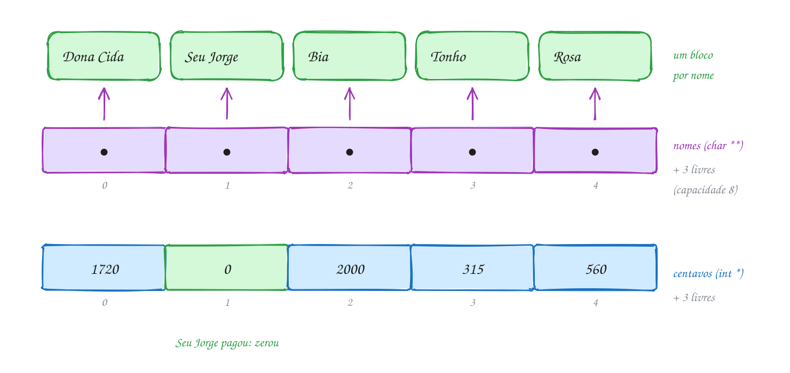
#include <stdio.h>
#include <stdlib.h>
#include <string.h>
// Cópia de uma string num bloco do tamanho exato.
char *duplicar(const char *texto) {
char *copia = malloc(strlen(texto) + 1);
if (copia != NULL) {
strcpy(copia, texto);
}
return copia;
}
// Dobra a capacidade dos dois vetores paralelos. Recebe o ENDEREÇO dos
// ponteiros do main (char *** e int **) porque o realloc pode mudá-los.
int crescer(char ***nomes, int **centavos, int *cap) {
int nova = *cap * 2;
char **mais_nomes = realloc(*nomes, nova * sizeof **nomes);
if (mais_nomes == NULL) {
return 0;
}
*nomes = mais_nomes;
int *mais_centavos = realloc(*centavos, nova * sizeof **centavos);
if (mais_centavos == NULL) {
return 0;
}
*centavos = mais_centavos;
printf("(caderno cresceu: %d -> %d clientes)\n", *cap, nova);
*cap = nova;
return 1;
}
int buscar(char **nomes, int qtd, const char *nome) {
for (int i = 0; i < qtd; i++) {
if (strcmp(nomes[i], nome) == 0) {
return i;
}
}
return -1;
}
// Soma uma compra na conta do cliente; cria a conta se ela não existe.
int anotar(char ***nomes, int **centavos, int *qtd, int *cap, const char *nome, int valor) {
int i = buscar(*nomes, *qtd, nome);
if (i >= 0) {
(*centavos)[i] += valor;
return 1;
}
if (*qtd == *cap && !crescer(nomes, centavos, cap)) {
return 0;
}
char *copia = duplicar(nome);
if (copia == NULL) {
return 0;
}
(*nomes)[*qtd] = copia;
(*centavos)[*qtd] = valor;
(*qtd)++;
return 1;
}
void liberar(char **nomes, int *centavos, int qtd) {
for (int i = 0; i < qtd; i++) {
free(nomes[i]); // cada nome é um bloco
}
free(nomes); // depois o vetor de ponteiros
free(centavos);
}
int main(void) {
int qtd = 0;
int cap = 2;
char **nomes = malloc(cap * sizeof *nomes);
int *centavos = malloc(cap * sizeof *centavos);
if (nomes == NULL || centavos == NULL) {
free(nomes);
free(centavos);
return 1;
}
const char *quem[] = {"Dona Cida", "Seu Jorge", "Dona Cida", "Bia", "Tonho", "Rosa"};
int valor[] = {1250, 830, 470, 2000, 315, 560}; // em centavos
for (int k = 0; k < 6; k++) {
if (!anotar(&nomes, ¢avos, &qtd, &cap, quem[k], valor[k])) {
liberar(nomes, centavos, qtd);
return 1;
}
}
int i = buscar(nomes, qtd, "Seu Jorge"); // Seu Jorge pagou tudo
if (i >= 0) {
centavos[i] = 0;
}
int total = 0;
for (int k = 0; k < qtd; k++) {
printf("%-10s R$ %3d.%02d\n", nomes[k], centavos[k] / 100, centavos[k] % 100);
total += centavos[k];
}
printf("Total na rua: R$ %d.%02d\n", total / 100, total % 100);
liberar(nomes, centavos, qtd);
return 0;
}
// Saída:
// (caderno cresceu: 2 -> 4 clientes)
// (caderno cresceu: 4 -> 8 clientes)
// Dona Cida R$ 17.20
// Seu Jorge R$ 0.00
// Bia R$ 20.00
// Tonho R$ 3.15
// Rosa R$ 5.60
// Total na rua: R$ 45.95
Cada anotação passa por uma busca. Achou, soma; não achou, talvez cresça e cria
a linha. Todo caminho de erro termina em liberar:
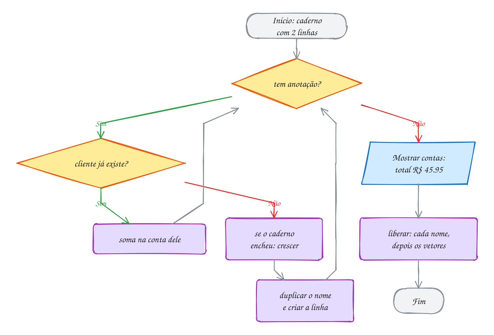
Exemplo A115 · A agenda em que cada linha cresce sozinha
#include <stdio.h>
#include <stdlib.h>
#include <string.h>
// Cópia de uma string num bloco do tamanho exato.
char *duplicar(const char *texto) {
char *copia = malloc(strlen(texto) + 1);
if (copia != NULL) {
strcpy(copia, texto);
}
return copia;
}
// Põe um horário na linha do barbeiro b. Só ESSA linha cresce: as outras
// nem ficam sabendo. Devolve 0 se faltar memória.
int agendar(int **horarios, int *qtd, int *cap, int b, int hora) {
if (qtd[b] == cap[b]) {
int nova = cap[b] == 0 ? 1 : cap[b] * 2;
int *maior = realloc(horarios[b], nova * sizeof *maior); // NULL na 1ª vez
if (maior == NULL) {
return 0;
}
horarios[b] = maior;
cap[b] = nova;
}
horarios[b][qtd[b]] = hora;
qtd[b]++;
return 1;
}
void liberar(char **nomes, int **horarios, int *qtd, int *cap, int n) {
for (int b = 0; b < n; b++) {
free(nomes[b]); // cada nome é um bloco
free(horarios[b]); // cada linha também (free(NULL) não faz nada)
}
free(nomes);
free(horarios);
free(qtd);
free(cap);
}
int main(void) {
const char *equipe[] = {"Juca", "Neide", "Rafa"};
int n = 3;
// calloc: linhas começam NULL e contadores começam em 0
char **nomes = calloc(n, sizeof *nomes);
int **horarios = calloc(n, sizeof *horarios);
int *qtd = calloc(n, sizeof *qtd);
int *cap = calloc(n, sizeof *cap);
if (nomes == NULL || horarios == NULL || qtd == NULL || cap == NULL) {
liberar(nomes, horarios, qtd, cap, 0);
return 1;
}
for (int b = 0; b < n; b++) {
nomes[b] = duplicar(equipe[b]);
if (nomes[b] == NULL) {
liberar(nomes, horarios, qtd, cap, n);
return 1;
}
}
// pedidos do dia: barbeiro escolhido e horário
int quem[] = {1, 0, 1, 1, 2, 1, 0};
int hora[] = {9, 10, 11, 13, 14, 15, 16};
for (int k = 0; k < 7; k++) {
if (!agendar(horarios, qtd, cap, quem[k], hora[k])) {
liberar(nomes, horarios, qtd, cap, n);
return 1;
}
}
for (int b = 0; b < n; b++) {
printf("%-6s (%d de %d):", nomes[b], qtd[b], cap[b]);
for (int j = 0; j < qtd[b]; j++) {
printf(" %dh", horarios[b][j]);
}
printf("\n");
}
liberar(nomes, horarios, qtd, cap, n);
return 0;
}
// Saída:
// Juca (2 de 2): 10h 16h
// Neide (4 de 4): 9h 11h 13h 15h
// Rafa (1 de 1): 14h
//
// É uma matriz irregular que muda de forma enquanto o programa roda: a linha
// da Neide cresceu 1 -> 2 -> 4 e a do Rafa ficou com 1. No fim existem 10
// blocos (4 de controle, 3 nomes e 3 linhas), e liberar faz 10 free.
gcc ~/LPEDC/material/A115.c -o ~/LPEDC/material/A115 && ~/LPEDC/material/A115
Exemplo A116 · Uma linha de qualquer tamanho
#include <stdio.h>
#include <stdlib.h>
// Lê uma linha inteira, de qualquer tamanho, num bloco que cresce.
// Devolve NULL no fim da entrada (ou se faltar memória). Quem chama libera.
char *ler_linha(void) {
int cap = 4;
int qtd = 0;
char *linha = malloc(cap);
if (linha == NULL) {
return NULL;
}
int c;
while ((c = getchar()) != EOF && c != '\n') {
if (qtd + 1 == cap) { // + 1: sempre sobra lugar para o '\0'
char *maior = realloc(linha, cap * 2);
if (maior == NULL) {
free(linha);
return NULL;
}
linha = maior;
cap *= 2;
}
linha[qtd++] = (char)c;
}
if (c == EOF && qtd == 0) { // acabou a entrada
free(linha);
return NULL;
}
linha[qtd] = '\0';
return linha;
}
int main(void) {
char *nome;
int n = 0;
while ((nome = ler_linha()) != NULL) {
n++;
int tamanho = 0;
while (nome[tamanho] != '\0') {
tamanho++;
}
printf("Nome %d (%d bytes): %s\n", n, tamanho, nome);
free(nome); // cada linha é um bloco novo
}
return 0;
}
// Exemplo de uso (os nomes vêm do teclado; Ctrl+D encerra):
// Ana
// Nome 1 (3 bytes): Ana
// Maria Eduarda dos Santos
// Nome 2 (24 bytes): Maria Eduarda dos Santos
//
// Para testar: printf 'Ana\nMaria Eduarda dos Santos\n' | ~/LPEDC/rodar 07-memoria-dinamica/0058-juntando-tudo/A116.c
// Nenhum fgets com tamanho fixo: o bloco cresce 4 -> 8 -> 16 -> 32.
gcc ~/LPEDC/material/A116.c -o ~/LPEDC/material/A116 && ~/LPEDC/material/A116
Exercício E344 · ★☆☆
Escreva duas funções para a lista de compras:
char **criar_lista(const char *itens[], int n);
void liberar_lista(char **lista, int n);
criar_lista aloca um vetor de n ponteiros e uma cópia de cada item. Teste com "pao", "leite", "cafe" e "manteiga", mostre a lista e calcule quantos blocos e quantos bytes foram pedidos ao heap (num PC de 64 bits).
Saída esperada:
- pao
- leite
- cafe
- manteiga
5 blocos, 56 bytes
Exercício E345 · ★★☆
Leia frutas, uma por linha, até aparecer a palavra fim. Guarde cada uma num vetor de strings (char **) que começa com capacidade 1 e dobra quando enche. Mostre as frutas na ordem contrária e quantas vezes o vetor cresceu. Libere tudo no fim.
Entrada:
uva
manga
caju
acerola
fim
Saída esperada:
Ao contrário: acerola caju manga uva
O vetor cresceu 2 vezes
Exercício E346 · ★★☆
Leia a quantidade de alunos e de provas e depois as notas, linha por linha. Guarde numa matriz dinâmica de double (vetor de ponteiros) e mostre a média de cada aluno e a da turma, com uma casa decimal. As médias de cada aluno também vão para um vetor alocado. Libere tudo no fim.
Entrada:
3 2
7 8
5 6
9 10
Saída esperada:
Aluno 1: 7.5
Aluno 2: 5.5
Aluno 3: 9.5
Turma: 7.5
Exercício E348 · ★★★
Escreva a função
char **dividir(const char *texto, char separador, int *qtd);
que quebra o texto em pedaços pelo separador e devolve um vetor NOVO de strings NOVAS, cada uma do tamanho exato. A quantidade volta por *qtd. Teste com a lista do mercado "arroz;feijao;cafe;oleo de soja" e com ";;", que tem 3 pedaços vazios.
Saída esperada:
4 itens: [arroz] [feijao] [cafe] [oleo de soja]
3 itens: [] [] []
30 exercícios que misturam os assuntos do módulo, no ritmo da prova. Arquivos P0701.c a P0730.c, em material/; resoluções em _respostas/07-memoria-dinamica/lista/.
Exercício P0701 · ★☆☆ · Uma cópia no heap
O motorista de aplicativo anotou os km rodados nas corridas de hoje:
double km[6] = {12.4, 3.8, 25.1, 7.6, 18.0, 5.3};
Escreva double *copiar(const double *v, int n), que reserva com malloc um bloco novo do tamanho exato, copia os n valores e devolve o endereço (ou NULL se faltar memória). No main, faça a cópia, aplique na CÓPIA um desconto de 10% em cada corrida e mostre os dois vetores e o total de cada um. No fim, libere a cópia:
Saída esperada:
Original: 12.40 3.80 25.10 7.60 18.00 5.30 | total 72.20
Desconto: 11.16 3.42 22.59 6.84 16.20 4.77 | total 64.98
Exercício P0702 · ★☆☆ · Juntar nome e sobrenome no heap
Escreva
char *juntar(const char *a, const char *sep, const char *b, size_t *bytes);
que devolve uma string NOVA no heap com a, sep e b em sequência, do tamanho exato (nem um byte a mais), e guarda em *bytes quanto pediu ao malloc. Junte "Francisca" e "Pereira" com " " e "Manaus" e "AM" com " - ". Mostre cada resultado, o strlen e quantos bytes foram pedidos ao malloc, e libere as duas:
Saída esperada:
"Francisca Pereira": strlen 17, malloc de 18 bytes
"Manaus - AM": strlen 11, malloc de 12 bytes
Exercício P0703 · ★☆☆ · A lista de espera que cresce de 3 em 3
O posto de vacinação registra as senhas que chegam num vetor dinâmico de int que começa com capacidade 3 e, quando enche, ganha mais 3 posições com realloc. Chegaram estas 8 senhas:
int chegada[8] = {501, 502, 503, 504, 505, 506, 507, 508};
Adicione uma de cada vez e mostre uma linha toda vez que a capacidade mudar. No fim, mostre o vetor e libere:
Saída esperada:
Capacidade inicial: 3
Senha 504 não cabia: capacidade agora 6
Senha 507 não cabia: capacidade agora 9
Fila (8 de 9): 501 502 503 504 505 506 507 508
Resposta esperada: a saída acima (3 -> 6 -> 9).
Exercício P0704 · ★☆☆ · A identidade do tamanho que pedirem
Escreva int **identidade(int n), que monta no heap uma matriz n x n (um vetor de n ponteiros, cada um apontando para uma linha alocada com calloc) com 1 na diagonal e 0 no resto, e void liberar(int **m, int n). No main, monte e mostre as identidades de tamanho 2 e 4 e libere as duas:
Saída esperada:
Identidade 2x2:
1 0
0 1
Identidade 4x4:
1 0 0 0
0 1 0 0
0 0 1 0
0 0 0 1
Exercício P0705 · ★☆☆ · Conserte os dois free
O programa da padaria guarda as encomendas do dia no heap. Ele tem DOIS erros de propósito. O gcc já desconfia dos dois (leia os warnings), e o AddressSanitizer confirma, um de cada vez: rode, leia o relatório (a primeira linha diz o tipo do erro e a linha do programa), conserte e rode de novo. Ele deve mostrar:
Saída esperada:
Maior encomenda: 50
Total: 100 pães
Exercício P0706 · ★☆☆ · O cartão mascarado
O comprovante da maquininha mostra só os 4 últimos dígitos do cartão. Escreva char *mascarar(const char num), que devolve uma string NOVA no heap, do mesmo tamanho de num, com cada dígito trocado por '', menos os 4 últimos dígitos (espaços continuam espaços). O original não muda. Teste:
const char *cartoes[3] = {"4539 1488 0343 6467", "5162 3001 9925", "1234"};
Saída esperada:
4539 1488 0343 6467 -> **** **** **** 6467
5162 3001 9925 -> **** **** 9925
1234 -> 1234
Exercício P0707 · ★☆☆ · Faixas de idade do tamanho certo
A campanha de vacinação registrou as idades abaixo e quer contar quantas pessoas há em cada faixa de 10 anos (0-9, 10-19, ...). O número de faixas depende da maior idade, então o vetor de contadores é criado com calloc DEPOIS de achar a maior:
int idades[12] = {67, 8, 34, 71, 15, 42, 88, 3, 59, 64, 27, 80};
Mostre quantas faixas foram criadas e a contagem de cada uma (inclusive as vazias), e libere o vetor:
Saída esperada:
9 faixas
0- 9: 2
10-19: 1
20-29: 1
30-39: 1
40-49: 1
50-59: 1
60-69: 2
70-79: 1
80-89: 2
Exercício P0708 · ★☆☆ · A transposta numa matriz nova
Escreva int **transposta(int **m, int l, int c), que devolve uma matriz NOVA no heap, c x l, com t[j][i] = m[i][j]. A original continua inteira. Use funções criar(l, c) e liberar(m, l), como no texto do assunto 0056. No main, crie a matriz 2x3 de horas extras abaixo (linhas: Ana e Davi; colunas: semana 1 a 3), monte a transposta, mostre as duas e libere as duas:
2 5 1
4 0 3
Saída esperada:
Original (2x3):
2 5 1
4 0 3
Transposta (3x2):
2 4
5 0
1 3
Exercício P0709 · ★☆☆ · O realloc não zera
O calloc entrega o bloco zerado, mas, quando o realloc aumenta o bloco, a parte nova vem com o que estiver lá (lixo). Escreva
int *crescer_zerado(int *v, int n_velho, int n_novo);
que aumenta o bloco com realloc e zera SÓ as posições novas (de n_velho a n_novo - 1), devolvendo o novo endereço (ou NULL, deixando v intacto). No main, crie com calloc os pontos de 3 jogadores de um torneio de dominó, anote algumas vitórias, cresça para 5 jogadores e anote mais. Mostre o placar nas duas etapas:
Saída esperada:
Placar (3 jogadores): 2 0 1
Placar (5 jogadores): 3 0 1 0 3
Exercício P0710 · ★☆☆ · Somar duas matrizes dinâmicas
Duas filiais de uma loja de celulares anotaram as vendas de 3 modelos (linhas) em 2 meses (colunas). As matrizes foram criadas no heap, com o tamanho que só se sabe na hora de rodar:
filial A: 14 9 / 6 11 / 20 17
filial B: 8 12 / 3 5 / 15 22
Escreva int **somar(int **a, int **b, int l, int c), que devolve uma matriz NOVA com a soma. Use criar e liberar (do P0708). Mostre a soma e libere as três matrizes:
Saída esperada:
Total das filiais:
Modelo 1: 22 21
Modelo 2: 9 16
Modelo 3: 35 39
Exercício P0711 · ★★☆ · Juntar a lista com um malloc só
O app da feira monta a lista de compras numa linha só para mandar por mensagem. Escreva
char *juntar_todas(const char **itens, int n, const char *sep);
que devolve uma string nova no heap com os itens separados por sep (sem sep depois do último), fazendo UM malloc só, do tamanho exato. Teste com a lista abaixo e os separadores ", " e " | ", e com uma lista vazia (n = 0, que devolve ""):
const char *feira[5] = {"farinha", "tucumã", "jambu",
"cheiro-verde", "pupunha"};
Saída esperada:
"farinha, tucumã, jambu, cheiro-verde, pupunha" -> malloc(47)
"farinha | tucumã | jambu | cheiro-verde | pupunha" -> malloc(51)
"" -> malloc(1)
Exercício P0712 · ★★☆ · Turmas de tamanhos diferentes
O cursinho tem três turmas, cada uma com um número diferente de alunos:
turma A: 7.5 8.0 6.0
turma B: 9.0 5.5 7.0 8.5 6.5
turma C: 4.0 10.0
Em vez de uma matriz retangular (que desperdiça casas), monte no heap um vetor de 3 ponteiros, em que a linha i tem EXATAMENTE tam[i] notas: double **notas e int tam[3] = {3, 5, 2}. Calcule a média de cada turma, a média geral (de todos os alunos) e mostre quantos bytes de notas foram alocados contra os de uma matriz 3x5:
Saída esperada:
Turma A (3 alunos): média 7.17
Turma B (5 alunos): média 7.30
Turma C (2 alunos): média 7.00
Média geral: 7.20
Bytes das notas: 80 (matriz 3x5 usaria 120)
Exercício P0713 · ★★☆ · Ler uma linha de qualquer tamanho
O fgets precisa de um vetor de tamanho fixo. Escreva char *ler_linha(void), que lê uma linha inteira do teclado, de QUALQUER tamanho, com getchar: o buffer começa com capacidade 8 e dobra com realloc sempre que enche. O '\n' não entra. Devolve a linha no heap (quem chama faz o free), ou NULL se a entrada já tiver acabado. Para mostrar o crescimento, a função imprime uma linha a cada realloc. No main, leia uma linha e mostre o tamanho:
Exemplo de execução:
Rua Ramos Ferreira, 1200, Centro, Manaus
(cresceu para 16)
(cresceu para 32)
(cresceu para 64)
Lido: "Rua Ramos Ferreira, 1200, Centro, Manaus" (40 caracteres)
(a primeira linha é a que você digita)
Resposta esperada: a execução acima.
Exercício P0714 · ★★☆ · Inserir em ordem num vetor que cresce
A loja guarda os preços dos produtos em ordem crescente num vetor dinâmico que começa com capacidade 2 e dobra quando enche. Escreva
bool inserir(int **v, int *n, int *cap, int valor);
que garante espaço (com realloc, dentro da função) e encaixa o valor no lugar certo, empurrando os maiores. Insira os preços abaixo, um por vez, mostrando a capacidade sempre que ela mudar, e mostre o vetor no fim:
int novos[7] = {45, 12, 89, 30, 12, 70, 5};
Saída esperada:
(capacidade 2)
(capacidade 4)
(capacidade 8)
Preços (7 de 8): 5 12 12 30 45 70 89
Exercício P0715 · ★★☆ · Conserte o diário de bordo
O diário de bordo de um barco de linha guarda o nome do barco numa cópia no heap e as paradas num vetor que cresce. O programa tem TRÊS erros de propósito. Dois o AddressSanitizer acusa (um de cada vez); o terceiro não aparece nos testes, porque só dá problema no dia em que faltar memória. Conserte os três. O programa deve mostrar:
Saída esperada:
Barco: Comandante Paiva
Paradas (h): 0 6 14 20 31
Viagem total: 31 horas
Exercício P0716 · ★★☆ · Recortar a imagem
Uma imagem em preto e branco está num vetor de strings, uma por linha ('#' é pixel aceso):
const char *img[6] = {"..........",
"..####....",
".#....#...",
".#.##.#...",
"..####....",
".........."};
Escreva char **recortar(const char **img, int l0, int c0, int alt, int larg), que devolve uma imagem NOVA no heap com alt linhas, cada uma uma string de larg caracteres (+ '\0'), copiada a partir da linha l0, coluna c0. Escreva também void liberar(char **m, int alt). Recorte o desenho (linhas 1 a 4, colunas 1 a 6) e, do recorte, só o miolo 2x4 (linhas 1 e 2, colunas 1 a 4 do recorte):
Saída esperada:
Recorte 4x6:
.####.
#....#
#.##.#
.####.
Miolo 2x4:
....
.##.
Exercício P0717 · ★★☆ · A média móvel do sensor
Um sensor de temperatura de uma câmara fria manda uma leitura por minuto, e o painel mostra a média das K últimas. Guarde as últimas K leituras num bloco de K double alocado com malloc, usado em roda (buffer circular): a leitura nova entra na posição pos, que avança e volta a 0 depois da última. Com K = 4 e as leituras abaixo, mostre, a cada minuto, a média do que já está guardado (no começo, menos de K):
double leituras[9] = {4.0, 4.5, 5.0, 6.5, 8.0, 7.5, 5.0, 4.0, 3.5};
Saída esperada:
Min 1: leitura 4.0, média das últimas 1 = 4.00
Min 2: leitura 4.5, média das últimas 2 = 4.25
Min 3: leitura 5.0, média das últimas 3 = 4.50
Min 4: leitura 6.5, média das últimas 4 = 5.00
Min 5: leitura 8.0, média das últimas 4 = 6.00
Min 6: leitura 7.5, média das últimas 4 = 6.75
Min 7: leitura 5.0, média das últimas 4 = 6.75
Min 8: leitura 4.0, média das últimas 4 = 6.12
Min 9: leitura 3.5, média das últimas 4 = 5.00
Exercício P0718 · ★★☆ · Cópia rasa e cópia profunda
A agenda da semana de um consultório é uma matriz dinâmica 2x3 (linhas: manhã e tarde; colunas: seg, ter, qua) com o número de consultas. Faça DUAS cópias dela:
linhas (m_rasa[i] = m[i]);
Depois mude m[0][1] (terça de manhã) de 4 para 9 e mostre as três. Mostre também se a linha 0 de cada cópia mora no mesmo endereço que a de m. Cuidado na hora de liberar: as linhas da rasa são as de m.
Saída esperada:
Original: manhã 3 9 2 | tarde 5 1 6
Rasa: manhã 3 9 2 | tarde 5 1 6
Profunda: manhã 3 4 2 | tarde 5 1 6
Linha 0 da rasa é a de m? sim
Linha 0 da profunda é a de m? não
Exercício P0719 · ★★☆ · União e interseção do tamanho exato
Dois grupos de WhatsApp de um condomínio têm os números dos apartamentos de quem participa, em ordem crescente:
int a[6] = {101, 103, 202, 204, 301, 402};
int b[5] = {103, 104, 204, 302, 402};
Escreva int *uniao(const int *a, int na, const int *b, int nb, int *n) e int *intersecao(...) com a mesma assinatura. Cada uma reserva o pior caso (na + nb para a união; o menor dos dois para a interseção), preenche andando nos dois vetores ao mesmo tempo e, no fim, ENCOLHE o bloco com realloc para o tamanho exato. Mostre os resultados e o tamanho de cada um:
Saída esperada:
Nos dois grupos ou em um (8): 101 103 104 202 204 301 302 402
Nos dois grupos (3): 103 204 402
Exercício P0720 · ★★☆ · A borda e o miolo do terreno
Um terreno foi dividido num quadriculado, e cada casa tem a altura do solo em centímetros. Leia do teclado o número de linhas e de colunas e depois as alturas, linha por linha. Guarde numa matriz dinâmica (vetor de ponteiros) e mostre a soma das casas da BORDA (primeira e última linha, primeira e última coluna, sem contar canto duas vezes) e a do MIOLO (o resto):
Exemplo de execução:
Linhas e colunas: 3 4
Alturas:
5 2 7 1
3 9 8 4
6 0 2 5
Borda: 35
Miolo: 17
(as alturas são digitadas; o programa mostra só as outras linhas)
Resposta esperada: Borda 35 e Miolo 17.
Exercício P0721 · ★★★ · Um vetor que cresce para qualquer tipo
Escreva um vetor dinâmico genérico, que serve para int, double ou qualquer outro tipo. Sem struct (só no módulo 08), o estado fica em três variáveis do main (void *v, size_t n, size_t cap), passadas por endereço:
bool empurrar(void **v, size_t *n, size_t *cap, size_t tam, const void *item);
A função dobra a capacidade quando enche (começando em 1), copia os tam bytes de item para o fim com memcpy e devolve false se faltar memória. Use-a para guardar os gols por rodada de um time (int) e as médias de público (double):
int gols[7] = {2, 0, 1, 3, 1, 1, 4};
double publico[3] = {18450.5, 22010.0, 9875.25};
Mostre cada vetor, n e cap, e libere os dois:
Saída esperada:
Gols (n = 7, cap = 8): 2 0 1 3 1 1 4
Público (n = 3, cap = 4): 18450.50 22010.00 9875.25
Exercício P0722 · ★★★ · Somar duas matrizes esparsas
Duas fiscalizações anotaram as multas por quarteirão de um bairro (grade de 100 x 100), e quase todos os quarteirões têm zero. Cada matriz é guardada como triplas (linha, coluna, valor) em ordem de linha e coluna, num vetor de int no heap (3 int por tripla):
int a[] = {0, 4, 2, 3, 7, 1, 3, 9, 5, 42, 0, 3}; // 4 triplas
int b[] = {3, 7, 4, 10, 10, 1, 42, 0, 2, 99, 99, 6}; // 4 triplas
Escreva int *somar(const int *a, int na, const int *b, int nb, int *n), que devolve a soma também em triplas ordenadas, sem montar a grade de 10.000 casas: ande nas duas listas ao mesmo tempo (como na união do P0719), somando os valores quando a posição for a mesma. O resultado começa com capacidade 2 triplas e dobra com realloc. Mostre as triplas e quantos bytes a soma ocupa contra a grade cheia:
Saída esperada:
Soma (6 triplas): (0,4,2) (3,7,5) (3,9,5) (10,10,1) (42,0,5) (99,99,6)
Esparsa: 72 bytes; grade cheia: 40000 bytes
Exercício P0723 · ★★★ · Quebrar o texto em linhas
O visor da máquina de cartão tem 16 colunas. Escreva
char **quebrar(const char *texto, int largura, int *n_linhas);
que divide o texto em linhas de no máximo largura caracteres, quebrando nos espaços (uma palavra nunca é cortada, a não ser que sozinha passe da largura: aí ela é partida). Cada linha é uma string nova no heap, sem espaço no começo nem no fim, e o vetor de linhas cresce com realloc. Mostre as linhas entre barras, para ver o tamanho, e libere tudo:
const char *msg = "Pagamento aprovado no credito em 3x sem juros. "
"Obrigado pela preferencia, volte sempre!";
Saída esperada:
|Pagamento | 9
|aprovado no | 11
|credito em 3x | 13
|sem juros. | 10
|Obrigado pela | 13
|preferencia, | 12
|volte sempre! | 13
7 linhas
Resposta esperada: a saída acima (7 linhas).
Exercício P0724 · ★★★ · Multiplicar números que não cabem em nenhum tipo
Escreva char *multiplicar(const char *a, const char *b), que recebe dois números naturais como strings de dígitos, de qualquer tamanho, e devolve o produto numa string nova no heap, sem zeros à esquerda. Faça como na conta à mão: o dígito i de a (contado da direita) vezes o dígito j de b vai para a casa i + j de um vetor de int alocado com calloc, e depois se acertam os "vai um". Teste:
"12" x "34"
"99999999999" x "99999999999"
"123456789012345678901234567890" x "987654321"
"2026" x "0"
Saída esperada:
12 x 34 =
408 (tamanho 3)
99999999999 x 99999999999 =
9999999999800000000001 (tamanho 22)
123456789012345678901234567890 x 987654321 =
121932631124828532112482853211126352690 (tamanho 39)
2026 x 0 =
0 (tamanho 1)
Exercício P0725 · ★★★ · Conserte a lista de convidados
O programa da festa junina guarda os nomes dos convidados em cópias no heap e um vetor de ponteiros, também no heap. Ele tem TRÊS erros de propósito. O gcc desconfia de dois (leia os warnings) e o AddressSanitizer acusa o terceiro assim que o programa roda. Conserte os três sem mudar a ideia do programa. Ele deve mostrar:
Saída esperada:
1. Zefinha
2. Tião
3. Mariazinha
4. Chico Bento
4 convidados
Exercício P0726 · ★★★ · Multiplicar polinômios
Um polinômio de grau g pode ser guardado como g + 1 coeficientes, do termo independente para o de maior grau: 3 - 2x + x² vira {3, -2, 1}. Escreva:
int *mult_poli(const int *p, int gp, const int *q, int gq, int *gr);
long long valor(const int *p, int g, int x);
void mostrar(const int *p, int g);
mult_poli devolve um vetor novo (calloc) com o produto, de grau gp + gq: o coeficiente k soma p[i] * q[j] para todo i + j = k. valor calcula p(x) pelo método de Horner (de dentro para fora: ((a3 x + a2) x + a1) x + a0). Com p = 3 - 2x + x² e q = 1 + 4x, mostre p, q, o produto, e confira que r(2) = p(2) * q(2). Depois eleve (1 + x) à quinta potência multiplicando cinco vezes:
Saída esperada:
p(x) = 3 - 2x + x^2
q(x) = 1 + 4x
r(x) = 3 + 10x - 7x^2 + 4x^3
r(2) = 27; p(2) * q(2) = 27
(1 + x)^5 = 1 + 5x + 10x^2 + 10x^3 + 5x^4 + x^5
Exercício P0727 · ★★★ · O determinante por Laplace
O determinante de uma matriz n x n pode ser calculado pela expansão de Laplace na primeira linha: det(M) = soma, para j de 0 a n - 1, de (-1)^j * M[0][j] * det(menor(M, j)), em que menor(M, j) é a matriz (n - 1) x (n - 1) que sobra tirando a linha 0 e a coluna j. Para n = 1, o determinante é o próprio número.
Escreva a função recursiva double det(double **m, int n), que monta cada menor no heap (matriz dinâmica), calcula e libera. Conte num contador global quantas matrizes menores foram alocadas. Calcule o determinante das matrizes abaixo (uma 3x3 e uma 4x4) e da identidade 4x4:
A = | 2 -1 0 | B = | 1 0 2 -1 |
| 1 3 2 | | 3 0 0 5 |
| 0 1 4 | | 2 1 4 -3 |
| 1 0 5 0 |
Saída esperada:
det A (3x3) = 24, com 6 menores alocados
det B (4x4) = 30, com 15 menores alocados
det I (4x4) = 1, com 3 menores alocados
Resposta esperada: a saída acima (det A = 24, det B = 30, det I = 1).
Exercício P0728 · ★★★ · As palavras mais usadas do discurso
Conte as palavras de um discurso de formatura e mostre as 3 mais usadas. Não se sabe quantas palavras distintas virão, então guarde-as em dois vetores dinâmicos que crescem JUNTOS (dobrando): char **palavras (cada uma uma cópia no heap, em minúsculas) e int *cont. Palavras com menos de 3 letras não contam ("de", "a", "o"...). No empate, vale a que apareceu primeiro. Mostre também quantas distintas foram guardadas e a capacidade final:
const char *discurso = "Hoje a turma celebra. A turma estudou, a turma "
"errou, a turma aprendeu. Hoje celebramos o estudo e o futuro; "
"o futuro da turma comeca hoje!";
Saída esperada:
10 palavras distintas (capacidade 16)
1º turma (5)
2º hoje (3)
3º futuro (2)
Exercício P0729 · ★★★ · Quantas ilhas tem o mapa do rio
Num mapa de satélite do Anavilhanas, '#' é terra e '.' é água. Uma ILHA é um grupo de '#' ligados na horizontal ou na vertical (diagonal não liga). O mapa vem como um vetor de strings:
const char *mapa[6] = {"##....#...",
"##...###..",
"......#...",
"..#.......",
".###..##.#",
"..#...##.#"};
Conte as ilhas e o tamanho de cada uma. Use uma matriz dinâmica de bool visitado (alocada com calloc, já tudo false) e uma função recursiva int inundar(const char **mapa, bool **vis, int l, int c, int i, int j), que marca a casa (i, j) e as vizinhas de terra ainda não visitadas, e devolve quantas casas marcou:
Saída esperada:
Ilha 1: começa em (0, 0), 4 casas
Ilha 2: começa em (0, 6), 5 casas
Ilha 3: começa em (3, 2), 5 casas
Ilha 4: começa em (4, 6), 4 casas
Ilha 5: começa em (4, 9), 2 casas
Total: 5 ilhas
Resposta esperada: a saída acima (5 ilhas).
Exercício P0730 · ★★★ · O editor de linhas
Escreva um editor de texto mínimo: o documento é um vetor dinâmico de linhas (char **, cada linha uma cópia no heap) com n e cap. Escreva:
bool inserir(char ***doc, int *n, int *cap, int pos, const char *texto);
void apagar(char **doc, int *n, int pos);
inserir abre espaço na posição pos (0 <= pos <= n) empurrando as linhas seguintes uma casa para frente com memmove; apagar libera a linha pos e puxa as seguintes com memmove. O vetor dobra quando enche (começando em 2). Execute os comandos abaixo e mostre o documento no fim:
inserir 0 "Ata da reunião do condomínio"
inserir 1 "Pauta: portão da garagem"
inserir 2 "Encerrada às 21h"
inserir 2 "Aprovado o conserto por R$ 850"
inserir 1 "Presentes: 14 moradores"
apagar 3
inserir 3 "Aprovado o conserto por R$ 790"
Saída esperada:
(capacidade 2)
(capacidade 4)
(capacidade 8)
1 | Ata da reunião do condomínio
2 | Presentes: 14 moradores
3 | Pauta: portão da garagem
4 | Aprovado o conserto por R$ 790
5 | Encerrada às 21h
5 linhas, capacidade 8
Resolva num arquivo seu, com as flags de estudo (e valgrind ./programa como
segunda opinião). A versão final não pode gerar relatório de erro.
1. Apagar do caderno. No caderninho de fiado do texto do assunto 0058,
escreva int remover(char **nomes, int *centavos, int *qtd, const char *nome),
que apaga a linha do cliente e puxa as de baixo para cima. Teste removendo
"Seu Jorge" e mostre o caderno.
Ficam Dona Cida (17.20), Bia (20.00), Tonho (3.15) e Rosa (5.60), total
R$ 45.95. O caminho: ache o índice i, faça free(nomes[i]) (o nome é um
bloco), depois copie nomes[k] = nomes[k + 1] e centavos[k] = centavos[k + 1]
para k de i até qtd - 2 e faça (*qtd)--. Um free só: os ponteiros
puxados continuam apontando para os mesmos blocos.
2. A matriz de dois mallocs. Escreva int **criar_matriz(int l, int c)
que usa só dois malloc: um bloco com os l * c inteiros e um vetor de l
ponteiros com m[i] = bloco + i * c. Escreva também o liberar. Teste com
uma matriz 3 x 4 preenchida com i * 4 + j e mostre m[2][3].
m[2][3] vale 11. Para liberar: free(m[0]) (é o endereço do bloco de
dados) e free(m). Dois malloc, dois free, dados contíguos e a notação
m[i][j] preservada. Cuidado: free(m[1]) seria um erro, porque m[1] não
veio de um malloc.
3. Matriz simétrica econômica. Numa tabela de distâncias entre 4
cidades, d[i][j] == d[j][i] e a diagonal é 0. Guarde só o triângulo de baixo
(com a diagonal) num vetor alocado com malloc de n * (n + 1) / 2
posições, com o elemento (i, j), i >= j, em i * (i + 1) / 2 + j.
Escreva int indice(int i, int j), que troca i e j quando i < j.
Preencha o vetor com a tabela {{0, 12, 30, 25}, {12, 0, 18, 40}, {30, 18, 0, 22}, {25, 40, 22, 0}} (só o triângulo de baixo), imprima quantas
posições o vetor tem, os índices de (3, 1) e de (1, 3) e, por fim, a
tabela 4 x 4 inteira lida só do vetor, com %4d.
posicoes: 10 (matriz cheia: 16)
(3,1) -> 7 (1,3) -> 7
0 12 30 25
12 0 18 40
30 18 0 22
25 40 22 0
Dica: preencha com dois laços, j indo só até i, gravando
d[indice(i, j)] = dist[i][j]. Na hora de imprimir, os dois laços vão até
n e o indice cuida da metade de cima: (1, 3) vira (3, 1), índice
3 * 4 / 2 + 1 = 7. Com n = 1000, a economia passa de 499 mil posições.
4. O gerente do heap. O heap tem dois blocos livres, de 120 e de 60 bytes
(int livre[2] = {120, 60}), e chegam três pedidos: 30, 80 e 55. Escreva
void simula(const char *nome, int best) que atende os pedidos na ordem,
descontando do bloco escolhido, e imprime a cada pedido o bloco usado e o que
sobrou nos dois (ou "falhou"). Com best == 0 é first fit (o primeiro
bloco que serve, olhando o 0 antes); com best == 1 é best fit (o menor
bloco que serve). Chame as duas.
first fit:
30: bloco 0, livres 90 e 60
80: bloco 0, livres 10 e 60
55: bloco 1, livres 10 e 5
best fit:
30: bloco 1, livres 120 e 30
80: bloco 0, livres 40 e 30
55: falhou (livres 40 e 30)
Dica: para cada pedido, percorra os dois blocos guardando o índice escolhido
(começando em -1); no first fit pare no primeiro que serve, no best fit troque
a escolha quando achar um bloco que serve e é menor. Escolher "o mais justo"
nem sempre é o melhor: deixa sobras pequenas demais. Os malloc reais usam
variações de first fit com listas por tamanho.
5. Tem memória, mas não cabe. Simule um heap de 1000 bytes com um
char heap[1000], todo preenchido com '.' (livre). Escreva
int aloca(char dono, int tam), que procura tam posições livres
seguidas a partir do começo, marca com a letra do dono e devolve o índice em que o
bloco começa (ou -1), e void libera(char dono). Escreva também um
relatorio que imprime o total livre e o maior pedaço livre contíguo. Aloque
A = 300, B = 200 e C = 400, libere B, mostre o relatório e tente alocar
D = 250. Depois libere C, mostre o relatório e tente D de novo.
A em 0
B em 300
C em 500
livres: 300, maior pedaco contiguo: 200
D (250) em -1
livres: 700, maior pedaco contiguo: 700
D (250) em 300
Dica: no aloca, conte uma "corrida" de livres (zere ao achar uma posição
ocupada); quando ela chegar a tam, o bloco começa em i - tam + 1. Há 300
bytes livres, mas em dois pedaços (200 onde era B e 100 no fim), e um bloco
precisa ser contíguo: é a fragmentação externa. Liberando C, os pedaços
se juntam num de 700.
6. Repetir texto. Escreva char *repetir(const char *s, int n) que
devolve uma string nova com s repetida n vezes. Quantos bytes
repetir("ab", 3) pede? E repetir("ab", 0)?
"ababab" precisa de 2 * 3 + 1 = 7 bytes. Com n = 0, 1 byte só com o
'\0': uma string vazia válida, que quem chama também precisa liberar.
Monte com strcpy no primeiro e strcat nos seguintes, ou copiando com um
índice.
7. O vetor que encolhe. Escreva um vetor dinâmico de int que começa
com capacidade 1, dobra com realloc quando enche e corta pela metade
quando a quantidade fica menor que um quarto da capacidade. Use
int insere(int **v, int *qtd, int *cap, int x) e
void remove_fim(int **v, int *qtd, int *cap). Insira 10, 20, ..., 90 e
depois remova 6 vezes, imprimindo qtd e cap depois de cada operação.
insere 10: qtd 1 cap 1
insere 20: qtd 2 cap 2
insere 30: qtd 3 cap 4
insere 40: qtd 4 cap 4
insere 50: qtd 5 cap 8
insere 60: qtd 6 cap 8
insere 70: qtd 7 cap 8
insere 80: qtd 8 cap 8
insere 90: qtd 9 cap 16
remove: qtd 8 cap 16
remove: qtd 7 cap 16
remove: qtd 6 cap 16
remove: qtd 5 cap 16
remove: qtd 4 cap 16
remove: qtd 3 cap 8
Dica: a função recebe int **v porque o realloc pode mudar o endereço do
bloco; use um ponteiro temporário e só troque *v se ele não for NULL. No
remove_fim, depois de (*qtd)--, teste *cap > 1 && *qtd < *cap / 4. O
"um quarto" (e não "metade") evita o vai e vem: com metade, um insere e um
remove alternados na fronteira fariam um realloc a cada operação.
8. Dois nomes, um bloco. Monte um programa com o trecho abaixo e rode com as flags de estudo:
int *a = malloc(3 * sizeof *a);
int *b = a;
b[0] = 5;
free(a);
a = NULL;
printf("%d\n", b == NULL);
printf("%d\n", b[0]);
Anote o que aparece. Depois conserte: guarde o valor de b[0] numa variável
antes do free, zere os dois ponteiros e imprima
guardado = ... e a == NULL: ..., b == NULL: ....
A primeira versão mostra 0 e cai no b[0]: o compilador já avisa
pointer 'b' used after 'free' e o ASan acusa
ERROR: AddressSanitizer: heap-use-after-free. A consertada mostra:
guardado = 5
a == NULL: 1, b == NULL: 1
Dica: a = NULL muda só a variável a; b continua com o endereço do bloco
liberado (um ponteiro solto). Zerar o ponteiro ajuda, mas não substitui saber
quem é o dono do bloco.
9. O vazamento a conta-gotas. Escreva void tarefa(int chamada), que faz
um malloc de 24 bytes, escreve um caractere no bloco e só dá free quando
chamada é par; nas ímpares, soma 24 numa variável global vazou. Chame
tarefa de 1 a 1000, imprima bytes sem free: ... e rode com as flags de estudo.
Depois conserte a função e rode de novo.
bytes sem free: 12000
==...==ERROR: LeakSanitizer: detected memory leaks
Direct leak of 12000 byte(s) in 500 object(s) allocated from:
#0 ... in malloc ...
#1 ... in tarefa ...
O seu contador e o LeakSanitizer batem: 500 chamadas ímpares × 24 = 12000
bytes em 500 blocos, com a linha do malloc apontada. Consertado (free
sempre), sai só bytes sem free: 0, sem relatório. Dica: num servidor que
roda essa função 1 milhão de vezes por dia, são 12 MB por dia.
10. Frase ao contrário. Use o dividir do E348 e uma função de juntar
para inverter a ordem das palavras: "o rato roeu a roupa" vira
"roupa a roeu rato o". A frase resultante deve ser um bloco novo, do tamanho
exato.
dividir com ' ' dá 5 pedaços. O tamanho final é a soma dos strlen (15)
mais 4 espaços mais o '\0': 20 bytes, o mesmo tamanho da frase original.
Monte percorrendo os pedaços do último para o primeiro. No fim, libere os 5
pedaços, o vetor deles e a frase nova.
Formato da prova do mestrado do PPGI/UFAM. Resolva no papel, marque uma letra
e só então abra o gabarito. Os trechos foram compilados com
gcc -std=c17 -Wall -Wextra (e rodados com o AddressSanitizer nos casos de
vazamento).
Questão 1. No programa abaixo, em que região da memória fica cada coisa:
total, chamadas, n e o bloco apontado por v?
int total = 0;
void registra(int n) {
static int chamadas = 0;
int *v = malloc(n * sizeof *v);
chamadas++;
free(v);
}
(C). Global e static moram nos dados (alocação estática) e duram o
programa todo. Parâmetro e local moram na pilha (alocação automática).
O bloco do malloc mora no heap (alocação dinâmica). A variável
v está na pilha; o bloco para onde ela aponta, no heap. Veja 0053.
Questão 2. Sobre alocação dinâmica em C, considere as afirmações e marque a alternativa CORRETA.
I. calloc(n, tam) zera o bloco reservado, e malloc não.
II. Depois de free(p), o ponteiro p passa a valer NULL automaticamente.
III. Se realloc falha, ele devolve NULL e o bloco antigo continua válido.
IV. malloc pode devolver NULL, e o resultado deve ser conferido antes do uso.
(A) Apenas I e III
(B) Apenas I, III e IV
(C) Apenas II e III
(D) Apenas II e IV
(E) Apenas I, II e IV
(B). I é verdadeira: só o calloc inicializa com zeros. II é falsa: o free não altera p, que passa a apontar para memória devolvida (ponteiro pendurado). III e IV são verdadeiras. Por isso o realloc usa um ponteiro auxiliar: v = realloc(v, ...) perde o bloco antigo se falhar. Veja 0055.
Questão 3. v aponta para um bloco do malloc que precisa crescer para
n inteiros. Qual forma é a correta?
v = realloc(v, n);v = realloc(v, n * sizeof *v); if (v == NULL) return 1;free(v); v = realloc(v, n * sizeof *v);realloc(v, n * sizeof *v); e continuar usando vint *novo = realloc(v, n * sizeof *v); if (novo == NULL) { free(v); return 1; } v = novo;(E). Se o realloc falha, devolve NULL e o bloco antigo continua
vivo. Em (B), v = NULL apaga o único endereço dele: vazamento. (A)
esquece o sizeof. (C) usa o ponteiro depois do free. (D) ignora que o
bloco pode ter mudado de endereço. Veja 0055.
Questão 4. Rodado com o AddressSanitizer, o que o relatório de vazamento acusa ao final?
char *p = NULL;
for (int i = 0; i < 3; i++) {
p = malloc(10);
if (p == NULL) return 1;
}
free(p);
free(D). Cada volta sobrescreve p com um endereço novo, e os dois blocos
anteriores ficam sem ninguém que os aponte. O free final libera só o
terceiro. O ASan mostra 20 byte(s) leaked in 2 allocation(s). Veja 0057.
Questão 5. Um vetor dinâmico começa com capacidade 1 e dobra a
capacidade (com realloc) sempre que enche. Depois de inserir 100
elementos, quantos realloc foram feitos e qual é a capacidade final?
(A). A capacidade passa por 1, 2, 4, 8, 16, 32, 64, 128: sete
dobras. As cópias somam 1 + 2 + ... + 64 = 127 < 2 · 100, então o custo total
das inserções é O(n) e o custo amortizado de cada uma é O(1). Crescer
de 1 em 1 faria 99 realloc e custo total O(n²). Veja 0055.
Questão 6. Uma matriz de 3 linhas e 4 colunas foi alocada como um bloco
único: int *v = malloc(3 * 4 * sizeof *v);. Em que índice de v fica o
elemento da linha 2, coluna 3 (contando de 0)?
(C). Linha após linha (row-major): i * colunas + j = 2 · 4 + 3 = 11.
O 12 já está fora do bloco, que vai de 0 a 11. Veja 0056.
Questão 7. Uma matriz dinâmica de L linhas foi montada como vetor de ponteiros: int **m, com um malloc para o vetor de ponteiros e um para cada linha. Considere as afirmações e marque a alternativa CORRETA.
I. São L + 1 chamadas de malloc.
II. Para liberar, primeiro se libera cada m[i] e só depois m.
III. As linhas ficam garantidamente vizinhas na memória.
IV. Alocar tudo num bloco único, com malloc(L * C * sizeof *v), precisa de um só free.
(A) Apenas I e II
(B) Apenas II e III
(C) Apenas I e III
(D) Apenas III e IV
(E) Apenas I, II e IV
(E). I é verdadeira: uma chamada para o vetor de ponteiros e uma por linha. II é verdadeira: se m for liberado antes, os endereços das linhas se perdem e elas vazam. III é falsa: cada malloc pode cair num lugar diferente do heap. IV é verdadeira: é a variante de bloco único, indexada por i * C + j. Veja 0056.
Questão 8. Em uma plataforma de 64 bits típica (int de 4 bytes,
ponteiro de 8), o que há de errado em
int **m = malloc(3 * sizeof(int)); para guardar 3 linhas?
int e int * têm o mesmo tamanho.malloc devolve void *.(A). O vetor guarda int *, de 8 bytes. Com sizeof(int) o bloco tem
metade do tamanho certo, e gravar m[1] já passa do fim. Escrever
malloc(3 * sizeof *m) evita o erro. (D) é falsa: void * converte sozinho
para qualquer ponteiro de dado. Veja 0056.
Questão 9. O que acontece com o programa abaixo?
int *cria(void) {
int v[3] = {1, 2, 3};
return v;
}
int main(void) {
int *p = cria();
printf("%d\n", p[0]);
return 0;
}
return copia o vetor para o main.v morre no return e p aponta para um frame que já não existe.return.(D). v mora no frame de cria, na pilha, e o frame some no return.
O gcc avisa (function returns address of local variable) e, na prática,
devolve NULL de propósito. O conserto é alocar com malloc (e o main
dar free) ou receber o vetor como parâmetro. Veja 0053.